EmuLoader ReLoaded 1.1.1
Build: dev
User guide for EmuLoader ReLoaded, the C++/Qt continuation of EmuLoader, for MAME and HBMAME.
Introduction
About this version
A community continuation of EmuLoader, originally created by Ciro Alfredo Consentino (1974–2021). Ported from his Emuloader v8.9.4.

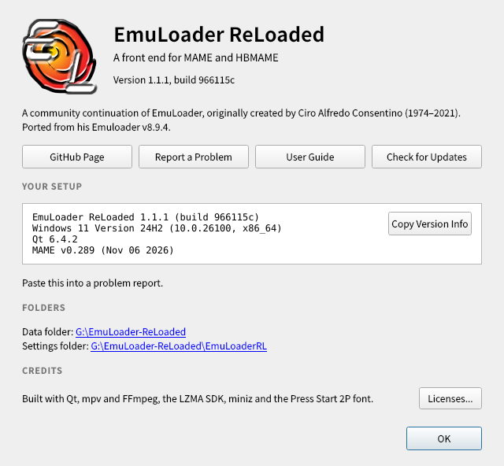
EmuLoader ReLoaded is written in C++ and Qt 6. It looks and works like the original. It is limited to the MAME family; the other arcade emulators the original supports (Demul, Supermodel, Model 2, ZiNc, Daphne, DICE) are left out.
Different Put it in an existing EmuLoader folder (or point it at one). It keeps its
own files in the EmuLoaderRL folder there, and never changes the original's. The first time it
starts, it copies your settings, favorites, play history, custom parameters and image and video settings from
the original, then makes the games list again from MAME, so that it matches your MAME version. MAME's own files
(mame.ini, ui.ini, the ini folder) and your ROM, picture, video and
document folders are shared with the original, as they belong to MAME or to you. See Files.
Installed in a folder of its own, it asks once, at the first start, whether you have EmuLoader, or an earlier
copy of EmuLoader ReLoaded, installed in a different folder: select that folder to bring your data over, or skip
to start fresh. From the original, your data is copied as above; from an earlier copy of EmuLoader ReLoaded, its
whole EmuLoaderRL folder is copied, games lists too.
EmuLoader ReLoaded keeps the terms Ciro released EmuLoader on: free of charge and open source, it may be copied,
shared and changed, but not sold or used for commercial purposes. The full terms are in
licenses\EmuLoader-ReLoaded-License.txt, with the licenses of the software it includes.
In this guide, New marks something the original doesn't have and Different marks something that works differently. Every difference is also listed in Differences from the original.
Getting started
Using your existing EmuLoader folder
- Make a backup copy of your EmuLoader folder.
- Unzip
EmuLoader-ReLoaded-1.1.1-windows.zip. Then either:- copy the contents of its
EmuLoader-ReLoadedfolder into your EmuLoader folder (nothing of the original is overwritten; the program isEmuLoader-ReLoaded.exe), or - leave it where it is and start it with the data folder as a parameter:
EmuLoader-ReLoaded.exe --data "C:\Games\EmuLoader"
- copy the contents of its
- Start
EmuLoader-ReLoaded.exe. Your games list, favorites, filters and settings are used as they are.
Starting fresh
- Unzip the package anywhere you can write to (not under
Program Files). - Start
EmuLoader-ReLoaded.exe. On first start, it copies its icons, images and filter files fromdata_templateinto its folder. - A message says no emulator is set up yet: click Set Up MAME... (or open Menu Options, the orb at the
top left, > MAME/Arcade > Emulators Setup). Click Select and choose
mame.exe(any MAME build works, including custom builds such asmamearcade.exe), then OK. See Emulators Setup. - Click Create the Games List. EmuLoader runs
mame -listxmland scans your ROM folders, which takes a minute or two. A progress window shows each step, the machines found so far ("Found 12,500 machines") and the elapsed time. Cancel stops it and keeps the list you had.
The scan looks for each game's zip file (or 7z, or folder). With split sets, a clone whose ROMs are all its parent's has no file of its own, as MAME expects; it counts as available when its parent is. This needs a games list made by this version (a list made before doesn't know which clones those are: recreate it).
The main window

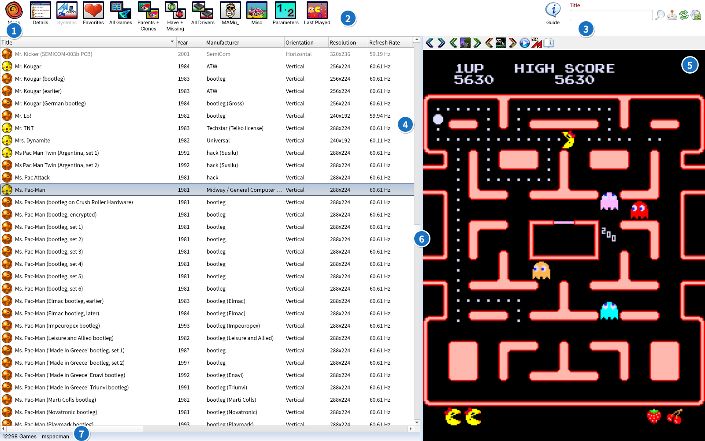
| Area | What it does | |
|---|---|---|
| 1 | Orb (top left) | Menu Options: Find a Setting, Settings, MAME/Arcade setup, Games List, Images and Help. See Find a Setting. |
| 2 | Tool bar | Filters (Games Filters, Have/Miss, Parent/Clone, Driver Status, Favorites, Misc, Machines), MAME's settings and the selected game's custom parameters. A button's picture and caption change to show the filter that's active. See The tool bar. |
| 3 | Search box (top right) | Finds games as you type. See Search and filters. |
| 4 | Games list | The games, with columns you can sort and resize. See Games list. |
| 5 | Image panel (right) | Snapshots, titles, flyers, marquees and more for the selected game. See Image panel. |
| 6 | Splitter | Drag the bar between the list and the images to resize them. |
| 7 | Status bar | Number of games listed and the selected game's short name. |
The window's size and position, the splitter, the column layout, the filters and the last selected game are restored the next time you start EmuLoader.
Menu Options > Use Alternate Frontend Icons switches to the original's other set of icons where it has
one (resources\main_icons\alternate): the MAME and HBMAME icons, the favorite star and a few more.
Keyboard and mouse
| Key / action | Effect |
|---|---|
| Enter or double-click | Run the selected game |
| Typing in the search box | Filter the list |
| Esc in the search box | Clear the search text |
| Mouse wheel over the picture | Previous / next category of the picture under the mouse (the layout stays) New |
| Ctrl + mouse wheel over the picture | Previous / next picture of the game, for the picture under the mouse New |
| Right-click the list, picture or column titles | Their menus |
| Ctrl+F3 | Favorites list on / off |
| F3 | Game documents on / off |
| F6 | Show / hide images |
| F9, Ctrl+F9 | Next / previous category (layout, in a multi-image layout) |
| F11, F12 | Previous / next picture |
| Shift+V | Play the game's video (Video previews) |
| F1 | This guide |
| Ctrl+Shift+F | Find a Setting New |
Finding and managing games
Games list

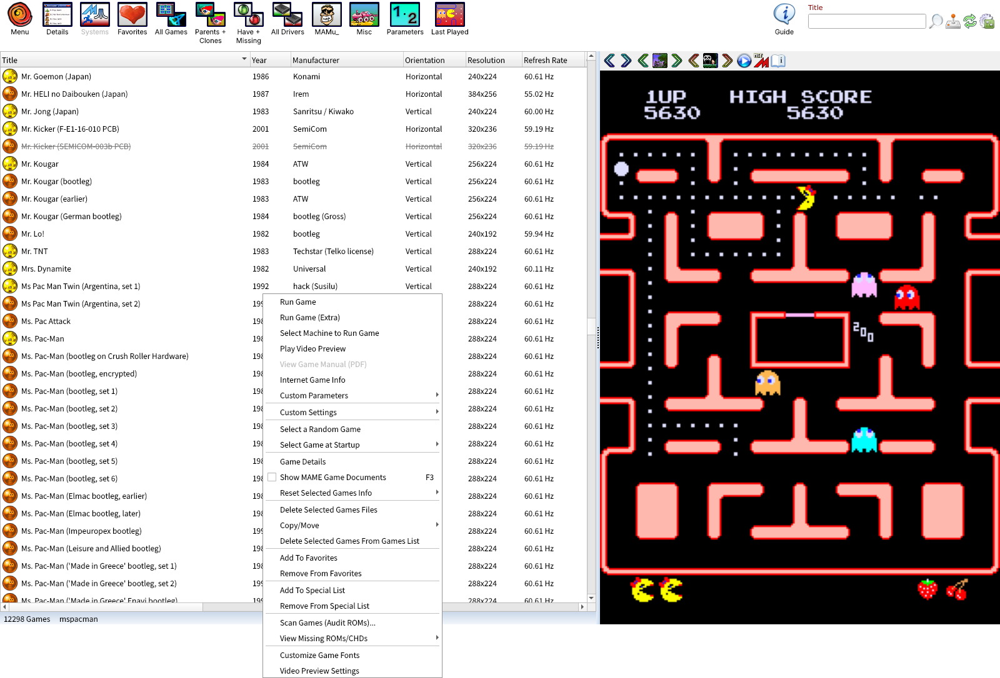
Icons and columns
- Icons. Each game has an icon for parent, clone, BIOS or device. It's in color when the ROMs are available and gray when they're missing. Games with missing ROMs have red text.
- Icon size and spacing. Right-click the list > Icon Size.
- Columns. Click a column title to sort and drag its edge to resize. Right-click a title to
choose which columns to show. The layout is saved in
columns_profile.ini. Customize Columns (the same menu, or Menu Options > Games List > Columns) lists them all in order: check a column to show it, move it with Up/Down (Ctrl+arrows) and set its width (F2 or a double-click; Ctrl+Left/Right for a pixel less or more). Reset All goes back to the list as it is, Default All to the original's order and widths. Customize Columns Header Font changes the column titles' font (lightmode.ini[GamesListHeader]); Default Header Font goes back to Segoe UI 9.
Views

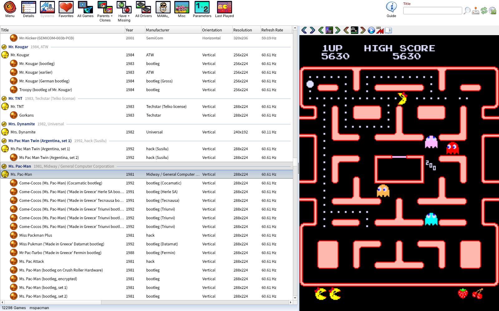

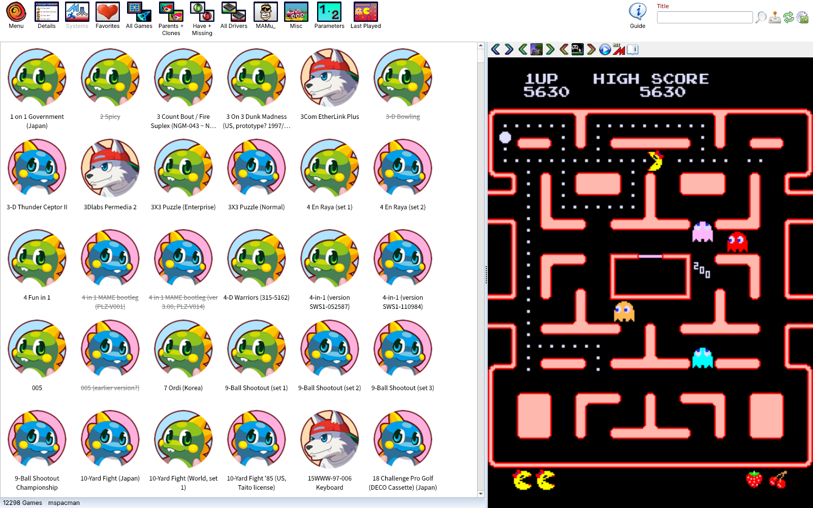
- View modes. The View button of the tool bar shows the games as Details (the columns),
Grouped (the columns, each parent with its clones under its title; the groups are in title order, so the
column titles don't sort; Settings > Games List > Disable Clone Indent lines the clones up), Small Icons,
Large Icons, Tiles (a large icon with the title, year, manufacturer and set name; Tiles View Cell
Size has four sizes) or Thumbnails (each game's in-game snapshot, its parent's for a clone without one,
or its icon when there's none). Thumbnail Settings > Customize sets the thumbnails' size, border, titles and
overlay icons (game, favorite, Special List) with a preview; they're saved in
games_filters.ini[Thumbnails]. The games list's menu has Thumbnails > Reload and Delete Selected Game Snapshot. The view is remembered ([Configuration] ViewMode); the selection, menus and keys work the same in all of them.
Status columns, sorting and fonts
- Driver status columns. These columns show icons and text. Settings > Games List can change them to text only, icons only, the first letter only or short titles.
- Sorting. Titles sort in natural number order ("2" before "10") by default. Settings > Games List > Disable Natural Sorting switches to Windows' plain word sort: apostrophes and hyphens are ignored, so '88 Games sorts among the "8"s, after 005 and 1 on 1 Government.
- Fonts. Menu Options > Games List > Customize Game Fonts sets the font and color for
each kind of set. They're saved in
sysgamecustomfont.ini.
Finding and marking games
- Right-click menu. Run Game, Run Game (Extra), Custom Parameters, Custom Settings, Select a Random Game, Game Details, Delete Selected Games Files, Copy/Move, Add to / Remove from Favorites and the Special List, Scan Games, and more. With several games selected (Ctrl or Shift+click), Add to / Remove from Favorites and the Special List apply to all of them.
- Typing a title. Type the first letters of a game's title in the list to jump to it; type the same
letter again for the next game with it. Menu Options > Games List > Incremental Search > Game Name
looks at the set name (
sf2) instead. - Titles. Menu Options > Games List > Alternate Title Format [Game, The] lists The Simpsons as Simpsons, The (and Le ... the same way), so it sorts under S. Game Title Extra Info leaves out what's in parentheses after the title, for parent sets, clone sets or all of them: Pac-Man (Midway) shows as Pac-Man. Sorting still uses the full title.
- Favorite icon. Favorites button menu > Show Favorite Icon in Games puts a star before your favorites in the full list.
- Special List. A second list of games, besides your favorites: right-click > Add To Special List.
Misc > Special List then shows only those games, or hides them. It's kept in
ini_files\special.txt, the original's file. - Select Game at Startup. Right-click > Select Game at Startup > Use Current: the game is selected each time EmuLoader starts, instead of the last one you selected. Its name in that menu selects it in the list; Clear Selection goes back to the last selected game.
Showing, hiding and the defaults
- Show or hide. Menu Options > Games List: Show Games Status Bar, and under Tool Bar Buttons, Show Tool Bar (Ctrl+T) and Bound to Games Panel (the tool bar spans the games list only, and the pictures go up to the top of the window). Without the tool bar, the games list's menu has Main Menu and Show Tool Bar.
- Back to the defaults. Menu Options > Restore Default Screen Size/Position (1130×570, centered; not when maximized). Menu Options > Games List > Columns > Reset to Default Size/Position: every column shown, at its starting width and place.
- Different Delete Selected Games From Games List is for console and computer games in the original. MAME's games are always listed, so here it says so and changes nothing.
Search and filters
Search box
Type in the box at the top right, and the list narrows as you type. Click the label above the box (it reads "Title" at first) to choose what to search: Title, Year, Manufacturer, Category, Version Added, Language, Driver Name, BIOS Name, Screen Resolution, Game Name, Clone Of, Software List Name or Number of Players. "Include Tool Bar Filters" in the same menu decides whether the search covers only the games the tool bar filters show, or all games. Press Esc to clear the text.
Language needs AntoPISA's languages.ini in arcade\filters (a game listed under several
languages gets the first). Number of Players uses Nomax's nplayers.ini there when it has the game
("2P alt", "4P sim"), else MAME's count; Menu Options > Games List > Show Players Info From nplayers.ini
Only leaves MAME's count out. Both show in the Language and Players columns and in Game Details too.
The same menu has Use Small Icons (smaller buttons beside the box), Show Filter Labels in Small Tool Bar (with the small tool bar icons, the label goes before the box, or is hidden) and Help.
The Controls button beside the box lists the control types (arcade\filters\mame_control_type.ini):
Joystick 8-Way, Trackball, Dial, Paddle, Lightgun, (None or Empty) ... Choose one to show the games that have it;
its name goes in the box. Include Tool Bar Filters, at the top of that menu, decides whether the tool bar
filters still apply. A text search, or the Reset button, replaces it.
The tool bar
Different Each button shows its caption as text under the picture, in the language you've chosen. (The original draws an English caption into the picture itself.) A button is as wide as its caption; a long caption takes two lines.

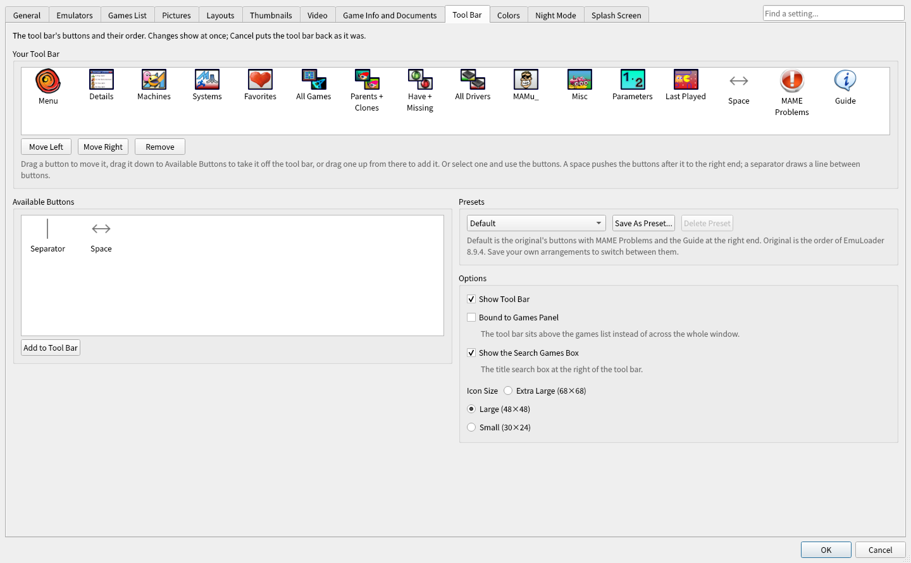
- The orb has the caption "Menu" (the original has none there).
- Icon size: Menu Options > Games List > Tool Bar Buttons > Icon Size: Extra Large (68×68), Large (48×48, the default, as in the original) or Small (30×24). Large fits the default window; Extra Large suits a maximized window on a wide screen.
- High-resolution screens: with Windows display scaling (150%, 200%), the pictures come from the sharp 128×128 version in each icon file, and the captions are drawn at the screen's full resolution.
- Narrow window: buttons that don't fit move into a » menu at the end of the tool bar. Choose one there to use it as if you'd clicked the button.
- Different Customize (Settings > Tool Bar: Menu Options > Games List > Tool Bar Buttons > Customize, or a right-click on the tool bar): the tool bar on top, the buttons that aren't on it below. Drag a button to move it, drag it down to take it off the tool bar, or drag one up to add it; or select one and use Move Left, Move Right, Remove and Add to Tool Bar. A Separator draws a line between buttons; a Space pushes the buttons after it to the right end. Each change shows at once; Cancel puts the tool bar back as it was. The original only showed or hid its buttons, in a fixed order.
- Presets: Default (the original's buttons, then the Guide at the right end), Original (EmuLoader
8.9.4's order, without the Guide), and your own (Save As Preset..., kept in
EmuLoaderRL\toolbar_presets.ini). The order is saved as[EmuLoaderRL] ToolBarOrder;[ToolBar] GamesFilters_Buttonsis kept up to date for the original. - The same tab has Show Tool Bar, Bound to Games Panel, Show the Search Games Box and the icon size.
- Different The Parameters button opens the selected game's custom parameters (see Custom parameters). The original's buttons for other emulators, Load Game Using Metadata File (.cue) and Select Default Emulators, aren't shown.
- New The Guide button opens this guide. F1 opens it from any of EmuLoader's windows, at that window's section (in Settings, the section of the tab you're on); right-click it for What's Different, Getting Started, Keyboard and Mouse, and Troubleshooting.
Tool bar filters
- Have/Miss: all games, available only, missing only, and so on (6 modes).
- Parent/Clone: parents only, clones only, or both.
- Driver Status: opens the Driver Status Filter. Select a Category picks which status to look at:
the driver's overall status, or only its emulation, colors, sound or graphics. Select a Status picks the
games to list: all, working (good and imperfect), good, imperfect, or non-working (preliminary). For example,
Sound Status with Working (Imperfect) lists the games whose sound is imperfect. MAME mentions colors, sound and
graphics only when they aren't good, so a game that doesn't mention them counts as good. The choices are saved
in
[ListFilter] DriverStatusandDriverStatusCategory, as in the original. - Favorites: click to switch between your favorites and the full list (or press Ctrl+F3); right-click for the favorites menu. Add or remove games with the games list's right-click menu.
- Machines: only when console and computer support is on. See Consoles and computers.
- Games Filters (the "All Games" button): picks the games of one system or maker, from the list in
arcade\filters\mame_filters.ini: Neo-Geo, Vector, BIOS and device sets, CHD games, then each maker's boards (Capcom CPS-1/2/3, Sega System 16, Model 2, Naomi, Konami, Taito, Namco, Atari, Nintendo...). The tiles are in groups: click a group's title to fold it. Double-click a tile, or select it and click Apply. Go to Current shows the filter in use, and the four buttons change the picture size. The button's picture and caption show the filter in use, and its tooltip its full name. Showing the favorites list sets the games filter aside; it comes back when you leave the favorites. Saved in[ListFilter] ArcadeGames, as in the original. Different With MAME 0.2xx, whose drivers are in folders (capcom/cps1.cpp), the original's driver-based filters list nothing; here they work. - Misc (Miscellaneous Filters): narrows the list further, by BIOS ROMs, device ROMs, game ROMs (with ROMs,
without, or only BIOS/device ROMs: "no main set"), audio type, interface (classic or mechanical), MAME control type
(
arcade\filters\mame_control_type.ini), screen orientation, save state support, cocktail mode, external artwork; hides BIOS or device sets, CHD games or games whose ROMs are all "no dump"; shows only merged sets, sets with CRC32 collisions, or the Neo-Geo MVS / ST-V games a multi-slot machine takes; and hides catver.ini categories (casino, mature, mahjong, quiz, console, computer...). Default clears them all. Saved inini_files\games_filters.ini [Miscellaneous]with the original's keys. New The button looks pressed while a filter is in use, and the control type is remembered. The ROM filters need a games list made by this version (they're grayed out otherwise). Special List shows only the games of the Special List, or hides them. Hide MAME Software List vgmplay Games hides the video game music list's games. - Filter MAME Games by Main CPU (Misc Filters) shows a row under the tool bar: pick a CPU from the list, which has every main CPU and how many games use it (Motorola MC68000 (1,234)), or type part of a CPU's name (z80, 68000, SH-2) and press Enter. The games list shows MAME's games with that main CPU, along with the other filters. Reset shows every CPU again; the ✕ closes the row and turns the filter off. Different The CPU is kept in the games list file, so a list made by an earlier build of this version needs creating again once (the row says so).
MAMu_ icons
The MAMu_ button of the tool bar shows each game's own icon (from the MAMu_ icon sets) instead of the parent,
clone, BIOS and device icons; right-click it for its options. Icons are <set name>.ico in the
icons folder (or its icons folder), or in its icons.zip; the folder is MAME's
icons_directory (MAME's ui.ini, or Settings > Games List > MAMu_ Icons), icons in
MAME's folder by default, several separated by ;.
- Enable Parent Icons / Enable Clone Icons: a parent's own icon; a clone's own icon, or its parent's when it has none.
- Enable Device Set Custom Icon:
deviceset.icofor device sets. - Enable Game Bios Icons / Driver Icons: the BIOS's or the driver's icon (
neogeo.ico,cps2.ico) when the game has none; Force uses them first. - Reload All Icons reads the files again, after you added some.
The settings are in [MAMu_] of EmuLoaderRL.ini, with the original's names. New
icons.7z is read as well as icons.zip (see .7z archives).
Where to get them. MAMu_'s icon collection is carried on by AntoPISA at
progetto-SNAPS (thanks also to Anna Wu and Janez): a full set
and updates, .ico files to put in the icons folder or in icons.zip. Settings > Games List has the
link above the MAMu_ icons folder.
MAMu_ Icons Manager (the MAMu_ button's menu) Different is the MAME Images Manager on its Icons (MAMu_)
category (the original has a window of its own for it): games with and without an icon, icons of games you don't have, invalid icons (no game's, or not an icon
file), deleting, renaming, zipping, with everything described in the Images Manager. Driver
icons (cps2.ico) and deviceset.ico aren't invalid. Icons that should never be listed as
invalid go in the excluded list (right-click the invalid icons: Add Selected To Excluded List, View/Edit
Excluded List; arcade\el_mamu_exclude.ini, as the original). Create / Edit Icon (right-click a
game) copies the blank icon to <game>.ico and opens it in the program the system edits icons with.
Favorites Manager
Right-click the Favorites tool bar button > More... opens the Favorites Manager: your favorites
lists, one file each in the favorites folder, with their title, number of games, file name and
date. The list in use has a star. (The original calls them profiles.)

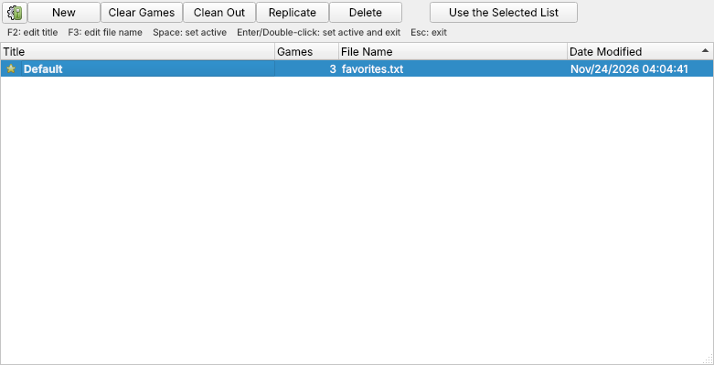
- New makes an empty list; Replicate copies the selected one.
- Clear Games takes every game off the selected list.
- Different Clean Out (the original's Cleanse) lists the selected list's games that aren't in the games list any more (another MAME version may have renamed or removed them) and takes them off. To keep some, select them and click Keep Selected. Tick Put them in a new favorites list to keep the ones taken off in a list of their own.
- Delete (Delete) deletes a list: its file goes to the Recycle Bin. The default list,
favorites.txt, can't be deleted or renamed. - F2 edits the title, F3 the file name.
- Use the Selected List (Space) makes it the list the Favorites button and the games list's Add to / Remove from Favorites use; Enter or a double-click does that and closes the window. While the favorites list is shown in the main window, only another list can be picked.
The window's size and columns are kept in el_extras.ini [FavoritesManager], as in the original.
Game Details

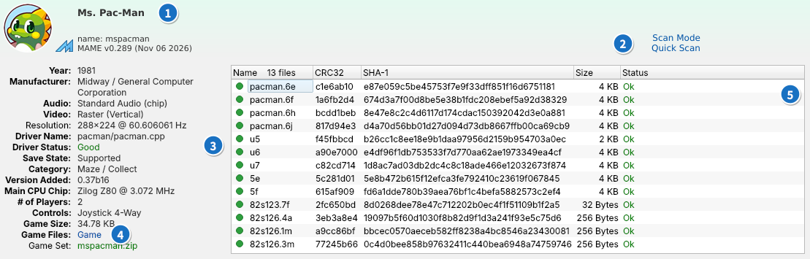
- 1 The game's title, its set name and the MAME version.
- 2 The scan mode.
- 3 The game's information.
- 4 Game Files: the sets and CHDs the game needs.
- 5 Every ROM and disk of the set, with its status.
Right-click a game and choose Game Details. The top shows the game's title, its set name (with its parent and BIOS), the MAME version and the scan mode, colored by whether the set is complete. On the left:
- year, manufacturer, audio (standard, discrete, or the samples file, found or missing), video and resolution, BIOS, driver and its status. For an imperfect or preliminary driver, which parts aren't good (emulation, protection, graphics, colors, sound) in their colors.
- cocktail and network support, save states, category, version added, main CPU, players, controls, mechanical, last played, play time (with the number of plays, "4x 01:02:05"), game size and software lists;
- Game Files: the set, its parent, its BIOS, the device sets and CHDs, in green when they're in your ROM folders and red when they're missing.
On the right, every ROM and disk of the set, with its CRC32, SHA-1, size and status: Ok, Missing, No Dump or Bad Dump, and whether it comes from the parent, the BIOS or a device. Click a column title to sort.
Different The original lists the ROMs from a file it writes when it creates the
games list. EmuLoader ReLoaded asks MAME for the one game when the window opens (mame -listxml <name>),
so the list always matches the MAME you use. ROMs are checked by CRC inside the set's .zip; a
.7z counts as found when it's there, and CHDs when their file is there (their SHA-1 isn't checked).
Play statistics
Each time a game ends, EmuLoader counts the play, notes the date and time, and adds the time it ran to the game's total. These are shown in three games list columns, Played, Last Played and Playtime (right-click a column title to show them), in Game Details, and in the Last Played window. A play counts whatever MAME's exit code, as in the original.
The statistics are in arcade\played_games\mame.txt (hbmame.txt for HBMAME), the same
file as the original, so both programs add to the same totals.
- Last Played tool bar button: the 25 most recently played games, with the time each was last played and its total play time and number of plays. Choose the system at the top when you have played both MAME and HBMAME games. Select Game (or double-click, or Enter) selects the game in the main list; Select Game and Exit also closes the window. A game hidden by the tool bar filters or the search can't be selected; you get a message saying so.
- Reset Selected Games Info (games list right-click menu): clears the total playtime, the last played date or the times played of the selected games, or all three (Reset All removes their line from the file). Several games can be selected with Ctrl or Shift.
- Settings > Games List > Hide Seconds in Last Played and Hide Seconds in Playtime leave the seconds out of the dates and totals.
Total playtime reads like 01:02:05, or 1 day, 02:56:40 after 24 hours.
Exporting the games list
Menu Options > Games List > Export MAME and Arcade Games List writes the games list to a text file. Choose a format and which games on the left, then Apply (or double-click the choice), and where to save it:
- Full Format: one line per game with the info chosen under Game Info To Export, in that order (Up, Down; uncheck what you don't want; Reset goes back to your last choices, Default to the original's). Use Games List Columns takes the columns shown in the games list instead. The first line has the titles. With Microsoft Excel Format, every value is in double quotes and separated by commas (a CSV file Excel can import); otherwise the values are separated by " - ".
- Short Format:
gamename=systemlines, as in favorites files. - MAME Content Manager Plus: set names only, for MCM+ (if the system is checked in its box).
Each format can export All Games (the whole list, filtered by the Export All Games choices: arcade
games, non-arcade MAME machines, MAME and HBMAME), the Visible Games (as filtered and searched in the main
window, in its order) or the Selected Games. The choices are kept in el_extras.ini
[ExportArcadeGames], the original's keys. Different Files are saved as UTF-8 (in Excel
format, with the mark Excel needs to read it so), with Windows line ends. Software list games are written as
nes\smb in the short format. The other arcade emulators' choices (Supermodel, Daphne, ...) aren't shown.
Deleting, copying and moving game files
Select one game or several and right-click > Delete Selected Games Files, or Copy/Move >
Copy / Move Selected Games Files to Folder. The window lists each game with its files: the ROM set
(.zip / .7z), its CHDs, and its configuration and NVRAM files, each with a check box.
The boxes under the list check or uncheck one kind of file for every game.
- Delete: files go to the Recycle Bin, so a mistake can be undone there. Afterwards the games list shows which sets are now missing. A clone kept inside its parent's set (merged) shows the parent's file, unchecked: deleting it removes the parent and all its clones.
- Copy / Move: pick the destination folder. Add System Folder puts the files in a
MAMEfolder inside it; Overwrite Files replaces files already there. CHDs go into a folder named after their game, where MAME looks for them.
The choices are kept in el_extras.ini [DeleteFiles] and [CopyMoveFiles].
Scanning games (ROM audit)
Which sets you have is worked out when the games list is made, by looking for each set's file in your ROM folders (a quick scan). To check them more closely, right-click the games list > Scan Games (Audit ROMs).... The window asks:

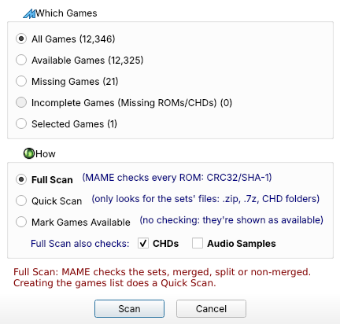
- Which Games: All Games, Available Games, Missing Games, Incomplete Games (Missing ROMs/CHDs) or Selected Games, each with how many there are. With several games selected, Selected Games is chosen.
- How:
- Full Scan: MAME checks every ROM of each set, by its CRC32 and SHA-1. Full Scan also checks CHDs (on at first: a set missing only its CHD is incomplete) and Audio Samples (off at first: missing samples are listed, but don't change whether you have the game; with it unticked, View Missing ROMs/CHDs leaves out the samples an earlier scan found missing).
- Quick Scan: only looks for the sets' files (
.zip,.7z, or a folder). - Mark Games Available: marks the games available without checking anything (it asks first).
The results
Click Scan. Every scan says what it did, and its message has View Results when something is missing:
the sets it didn't find (with the file it looked for, pacman.zip, and a CHD game's folder) and, for a Full
Scan, the incomplete ones with their missing files. A Full Scan shows its progress (Cancel stops it, keeping what was
checked), then how many sets are complete, incomplete and not found. When that differs from the games list, it asks
whether to update the list: incomplete sets are then shown as missing ROMs (gray icon, red text), and the Have/Miss
filter goes by them. View Results opens View Missing ROMs/CHDs (below) with that scan's sets; closing it comes back
to the message, so you can look before deciding. When the games list shows sets differently from what the scan found
(sets shown as missing that are complete, say), the message also has View Changes: a list of those sets with the
game, the set, what the games list shows and what the scan found. Double-click one to select it in the games list;
Save List To File writes the list as text. A Quick Scan also notes the sets it didn't find for View Missing
ROMs/CHDs. The window's choices are kept for
next time (EmuLoaderRL.ini [Preferences] ScanGamesMode and ScanSetsModeMAME,
the original's keys, and [EmuLoaderRL] AuditCHDs and AuditSamples).
View Missing ROMs/CHDs > All Games or Selected Game (the games list's right-click menu) shows what the scans found wrong, a set at a time; open one to see its files, with their size, the CRC32 and SHA-1 MAME expected (for a wrong checksum), the BIOS or device they belong to, and the problem (not found, incorrect checksum, incorrect length). The filters at the top: the software list games, CHDs Only, the sets with device ROMs and with BIOS ROMs, and Sets Not Found (the sets with no file at all, which the games list shows as missing already). Type in the search box and press Enter to find a game. Double-click a game, or press Enter, to select it in the games list; the right-click menu also has Save List To File, a text file to take to a ROM manager.
CHDs
New When MAME says a CHD isn't found but the file is there, a Full Scan looks at it and says why
MAME can't use it. Most often it's a delta CHD: some ROM managers save space by keeping only what differs from
another CHD, its parent, and MAME opens such a file only when the parent is the CHD of one of the set's own parents
(jojobajr2's cap-jjm-0.chd made from jojobar1's cap-jjm-1.chd can't be
opened). The line says Delta CHD: its parent is another set's; its tooltip names both files, and the right-click
menu's Copy chdman Command copies the command that makes a stand-alone copy
(chdman copy -i <the CHD> -ip <its parent> -o <name>-full.chd); put the new file in place of
the old one. When the parent isn't in the ROM folders at all, or the file is another CHD than the one this version of
MAME wants, it says so too.
Compared with the original
Different The original has a Select Scan Mode window, whose mode the six items of a Scan Games submenu use; here
one window does it all. The original checks the files itself, and can't check merged sets; here MAME does it
(mame -verifyroms, -verifysoftlist for a software list, -verifysamples), so
merged, split and non-merged sets are all checked as the MAME you use expects them. Creating the games list always
does a quick scan (a Full Scan of every set takes minutes). The original's Scan Games Mode window also set how the
software lists are made with the games list: that's in Create MAME Software Games List (Software
lists). The results are kept in arcade\games\mame_audit.txt, this version's own file.
Consoles and computers
New MAME also emulates consoles and computers. They are hidden by default.
To list them, turn on Settings > General > Enable Console and Computer Support (saved as
[EmuLoaderRL] ConsoleComputerSupport in EmuLoaderRL.ini). Turning it on also adds:
- the Machines tool bar button, which filters arcade games, machines with software lists and machines
without them (saved in
ini_files\games_filters.ini [MachineType]); - the console, computer and othersys levels in custom settings.
Machines are recognized as in the original, by their software lists
(arcade\games\mame.elsoftlist, written when the list is created) and by AntoPISA's
arcade\filters\mess.ini.
Software lists
MAME's consoles and computers run software: cartridges, floppy disks, tapes, CDs. MAME lists them in its
hash folder, one file per software list (nes.xml, megadriv.xml, ...). EmuLoader
lists their games with the machines, as the original does. They're shown with console and computer support
(above), and the Machines tool bar button has a MAME Software List Games choice to hide them.
- Making the lists. Menu Options > MAME/Arcade > Create MAME Software Games List asks
Update (makes the new lists and those that changed in MAME) or Overwrite (makes every list
again). Creating the games list updates them too, unless you untick Also update them when the games list is
created there. The hash folder is MAME's
hashpath(hashby default). Only the lists the machines run are made; the lists named inarcade\mame_softlist_exclude.txt(one per line) are left out. - Where the games go. In a folder named after their list, in a ROM folder:
roms\nes\smb.zip; CHDs inroms\<list>\<game>\. The quick scan looks for them there. Their pictures are found the same way:snap\nes\smb.png(orsnap\nes\smb\0000.png), and insnap\nes.zip,snap\nes\nes.ziporsnap\snap_sl.zipas the original. The Images Manager and Delete Images of Clone Games handle them too. - Running a game. A software list runs on a MAME machine:
mame nes -cart1 smb. When only one machine runs the list, it's used. When there are several, Select a Machine to Run the Game With opens the first time; the machine you pick is used for the whole list from then on, and is kept inarcade\mame_machines_usercustom.ini. Right-click > Select Machine to Run Game changes it. In that window, Show Available Only and Hide Preliminary Machines narrow the list; the machine in use is in bold, and Reset selects it again. - Requirements. Some games need another piece of software first (Atari 2600 Supercharger tapes need its
cartridge). The list says so, and EmuLoader adds it before the game:
mame a2600 -cart1 scharger -cass1 frogger. They're kept inarcade\games\mame.elsoftlistreq. - Custom parameters. Besides the game's and its parent's, a software list game has its list's parameters
(all the list's games) and its machine's. Parameters that start with a machine name run the game on that machine
instead (
famicom -window). They're inarcade\custom_params\mame\<list>\; the machine's are<machine>.txt. - Favorites and play statistics keep them as
nes\smb, as the original does, so a NES game isn't taken for an arcade game of the same name. - Game Details lists the game's files from its list in the hash folder, each found or missing.
- Customize MAME Software List (Menu Options > MAME/Arcade) lists the software lists in the hash folder,
with their media type. Uncheck the ones you don't want: their games leave the games list at once, and they aren't
made any more. They're kept in
arcade\mame_softlist_exclude.txt.
Machines List panel
Machines tool bar button > Enable MAME Machines Filter Panel shows the MAME machines that run software lists on the left of the games list, each parent with its clones under it. Double click a machine, or press Enter, and the games list shows the games of its software lists; they run with that machine. The All Games and Misc filters don't apply then and are grayed out; Have/Miss, Parent/Clone, Driver Status and favorites still do.
Right-click the panel for its filters (Have/Miss, Driver, Save State, Machines List Filter), Add Machine to /
Remove Machine From Disabled List, Customize Machines List, the icon size, Reset Columns Width and the panel's status
bar. Customize MAME Machines List checks or unchecks many machines at once; the unchecked ones are the
"disabled" machines that Show Enabled Only hides, kept in arcade\mame_machines_exclude.txt. The panel's
settings are kept in EmuLoaderRL.ini [MAMEMachinesFilterPanel], the original's keys.
The original's files are used: the lists are arcade\mame_softwarelist_games\<list>.el and
.elstatus, in the original's format. HBMAME's software lists work the same way, with its own files
(hbmame_softwarelist_games, ...).
Multi-slot machines
Some arcade machines take several cartridges, a game in each slot: the Neo-Geo MVS (up to 6), the Sega ST-V (4),
the Sega Mega-Tech (8) and the Nintendo PlayChoice-10 (10). Select two or more of their games (Ctrl-click)
and run one: Multi-Slot Machines lists them, a slot each. Move Up / Move Down
(Ctrl+Up / Down) change their order, Remove (Delete) takes one
out, and OK runs them: mame neogeo -cart1 mslug -cart2 kof98. Only the games you have go in, and a
single game runs on its own as usual.
For the Neo-Geo, Change picks the board: MAME's MV-6F (neogeo, the default, in bold), MV-4F,
MV-2F and the 1-slot boards. The games past the board's slots are grayed and stay out. The boards are listed in
arcade\mame_multislot_machines.txt; the one you pick is used the next time, and kept in this
version's copy of that file. The Neo-Geo and ST-V take only the games of MAME's lists of their cartridges
(hash\neogeo.xml, hash\stv.xml): creating the games list writes them to
arcade\games\mame_multicart_neogeo.ini and mame_multicart_stv.ini, which the Misc filters
Show Only Neo-Geo MVS and Show Only ST-V Multi-Slot use too.
Playing games
Running games
To start a game, double-click it, press Enter, or right-click it and choose Play Game.
MAME runs from its own folder, so its relative paths (roms, cfg, nvram, ...)
work as they do when you start it yourself. Different When MAME stops with an error, a window says why in plain words
(missing ROM files, a game this MAME doesn't know, a fatal error, ...) and shows MAME's own message, such as the
list of ROM files it couldn't find; Copy Message puts it all on the clipboard, for a forum post or a bug report.
When a game runs but MAME reports problems while it plays (artwork or other files it couldn't load), the
MAME Problems button appears on the tool bar, left of the Guide, and flashes from color to gray three
times. Click it to see what MAME wrote; it then stays, in gray, until another game starts. Right-click it and
choose Dismiss to take it away. It's an ordinary tool bar button otherwise: Settings > Tool Bar moves it, or
takes it off the tool bar. The status bar's line says it too (click it to see the problems).
The status bar keeps a short line about it too. The original's window showed only the exit code. When MAME can't be
started at all, a message gives the reason and the file. Settings > General > Ignore Exit Code 1 hides the error
that some MAME builds give on a normal exit.
Run Game Confirmation Dialog (Menu Options): before each game runs, a window shows the game, the emulator and MAME's full command line, with a warning when ROMs are missing. Run runs it; Cancel doesn't. Tick "Don't Show This Again" to turn the menu item off.
While a game runs, EmuLoader minimizes itself unless Settings > General > Don't Minimize EmuLoader When Running Games is on. Different "Hide Command Prompt Box > Run Game" hides only MAME's console window. The original hid MAME completely, which broke windowed mode.
Run Game (Extra)
Right-click a game and choose Run Game (Extra) to pick what MAME should do besides running the game. The window has four pages; tick Enabled on the ones you want, then click OK to start the game (Cancel runs nothing).

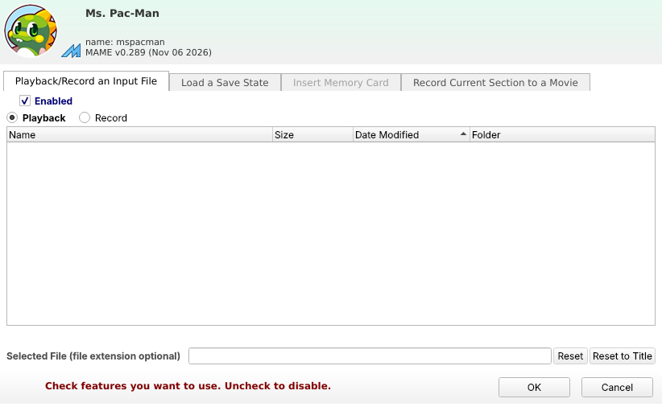
- Playback/Record an Input File: Playback replays a recording of the controls you pick in the
list; Record records one, under the name in the box (Reset puts the game's name there,
Reset to Title its title). The list shows
inp\<game>.inpand the files ininp\<game>\; new recordings go there. Exit Emulator After Input Playback and Record an Input Timecode File are MAME'sexit_after_playbackandrecord_timecode. - Load a Save State: starts the game from the save state you pick (
sta\<game>\*.sta). Auto Save State is MAME'sautosave. A note says so when MAME doesn't officially support save states for the machine. - Insert Memory Card: for the machines that have memory card slots (Neo-Geo, PGM2, Konami System 573 and a
few more), the card file for each slot. Pick a file in the list (double-click or Enter puts it in
slot 1, a
.mc2file in slot 2; the right-click menu can put it in any slot), type a path or click Select. Last Used brings back the file used last time for the game. The page is grayed out for machines without slots. - Record Current Section to a Movie: records the game to an AVI, MNG or WAV file, in
snap\record_video\<game>\(snapis MAME's snapshot folder). AVI and MNG are given to MAME relative to its snapshot folder; a WAV file is given with its full path, because MAME opens it from its own folder and doesn't create folders for it.
In each list, F2 renames the selected file and Delete deletes it (to the Recycle Bin);
both are also in the right-click menu. Folders and option values come from MAME's ini files (the folders from
mame.ini, the options from all the ini files MAME reads for the game); an option goes on MAME's
command line only when you change it from what MAME would use anyway.
The machines with memory cards are listed in arcade\games\mame_memcard_support.ini, written with
the games list (as the original). With a games list made by an older version, create the list again to get it.
The last cards used are kept in arcade\memcard_lastused\mame\.
Custom parameters
Right-click a game > Custom Parameters > Set Game Parameters [name], or click the tool
bar's Parameters button, to give MAME extra command line options for the selected game every time it runs, for example -cheat -nothrottle. They go after
the game's name. A <game> tag in them is replaced by the game's name, which then isn't put
first. For a clone, Set Parent Game Parameters sets them for its parent; a clone without parameters of its
own uses its parent's. Delete ... Parameters appears when there are parameters, and deletes them.
Custom parameters are for MAME (not HBMAME), as in the original.

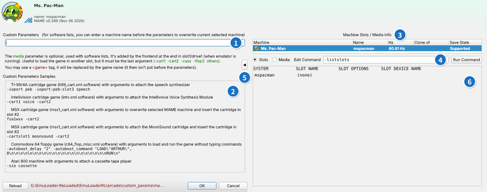
- 1 The game's parameters.
- 2 Examples.
- 3 Machine Slots / Media Info, for the machine.
- 4 Slots or Media, and Edit Command: other list options, run with Run Command.
- 5 The arrow hides or shows the panel.
- 6 What MAME says.
The window shows examples, and on the right Machine Slots / Media Info: what MAME says about the
machine's slots (-listslots) or media (-listmedia). Edit Command runs MAME with
other list options. The arrow button hides or shows this panel. Parameters are kept in
EmuLoaderRL\arcade\custom_params\mame\<name>.txt, in the original's format; the original's are copied there the first time.
Missing audio samples
Menu Options > Games List > Scan MAME/HBMAME Missing Audio Samples lists the games you have that play audio
samples whose samples set isn't in MAME's samples folders (samplepath, samples by default):
<set>.zip or .7z, as the original (not loose .wav or .flac files). Clones that share
their parent's samples are listed once. Right-click the list: Play (Enter), Remove Selected
(Del), Clear List, Rebuild List (after you've added samples), show all the games, the
available ones or those missing ROMs, and Save List To File. The link at the bottom opens Progetto-SNAPS's
samples page. Which games use samples, and which set, is written with the games list
(arcade\games\mame.elsamples, as the original's); with a list made by an older version, create it
again.
Pictures, documents and videos
Image panel
The panel shows one picture for the selected game, or up to four at once in a multi-image layout. The buttons above it:
| Button | Action |
|---|---|
| Blue < > | Previous / next picture in this category, when the game has more than one (for example, several snapshots). In a multi-image layout, every image that has another picture moves on. |
| Green < [icon] > | Previous / next category. Click the icon in between to choose a category from a list. Shown in the single image layout only, as in the original. |
| Orange < [icon] > | Previous / next layout. Click the icon in between to choose a layout from a list. |
| Play, Internet | Play the game's video (Video previews); open the game's page in your browser (Internet Game Info). |
| Images, Docs | Shown when the game documents use separate panels: switch between the pictures and the documents. See Game documents. |
New Over a picture, the mouse wheel changes the category (like the green arrows), in every layout: when several pictures are shown, only the one under the mouse changes, and that panel of the layout keeps it (as set in Settings > Layouts). The orange arrows change the layout. Ctrl + mouse wheel steps through that picture's other pictures of the game (like the blue arrows).
The original's keys work too: F6 shows or hides the images, F9 / Ctrl+F9 change the category (the layout in a multi-image layout), F11 / F12 show the previous / next picture.
Categories
Title Snapshot, Game Snapshot, Marquee, Flyer, Cabinet, Control Panel, Software Cover, PCB, Game Artwork,
End, Boss, Logo, Score, Versus, Game Over, How to Play and Select. Categories that are turned off in the
original's Category Settings (ini_files\image_category.ini) are skipped by the prev/next
buttons. The category you choose is remembered (ini_files\screenshot_layouts.ini,
[Single]).
Where pictures are looked for
As in the original, the folders come from MAME's own settings:
- Game Snapshot:
snapshot_directoryinmame.ini. - Everything else: the matching
*_directoryentry in MAME'sui.ini(for exampletitles_directory,flyers_directory,marquees_directory). EmuLoader reads theui.iniin its own folder first, then the one in MAME's folder. Without aui.ini, it usesarcade\sysimagefolders_arcade.ini. - An entry can list several folders separated by
;. Relative folders are relative to MAME's folder.
In each folder, a game's pictures can be:
| File | Meaning |
|---|---|
pacman.png | the first picture |
pacman0000.png, pacman0001.png, ... | more pictures, EmuLoader's naming |
pacman\0000.png, pacman\0001.png, ... | more pictures, MAME's snapshot naming |
titles\pacman.png | in a subfolder named after the category's folder |
titles.zip → pacman.png | inside a zip named after the category's folder |
Snapshots, titles, marquees, flyers, cabinets, control panels and covers can also be .jpg.
The other categories are PNG only, as in the original.
- Clones: when a clone has no picture, the parent's is shown, unless you turn off Display Parent Images in the right-click menu.
- Game Artwork: Menu Options > Images > Show Game Snap if Artwork Not Found shows the snapshot instead.
- Nothing found: Different the panel shows the category's picture,
faded, with "No Flyer" (in your language) and why: not in the Flyers folder or flyers.zip, no folder set for
that category, the folder gone, or the file damaged. When a folder needs setting, click the panel to open
Settings > Pictures. Your own "not available" picture for a category
(
resources\images\img_missing\<category>.png, as in the original) is shown instead when you have one. The original's flyer and marquee pictures, with their English text, are no longer included.
.7z archives
New Pictures and icons can be in .7z archives as well as .zip
files, with the same names and in the same places (snap.7z in the category's folder or next to it,
icons.7z in the icons folder); MAME reads both too. When there are both, the .zip is looked in
first. A .7z is only read: in the MAME Images Manager its pictures are listed, but can't be deleted,
renamed or moved (Unzip Images can unpack it).
Speed. A .7z is usually solid: many files compressed together in one block, so getting one
file out means decompressing the block up to it. Blocks up to 64 MB are decompressed once and kept in memory,
so the next pictures from them show at once. Bigger blocks would make every picture slow, so:
- a slow
icons.7zis read in full once when the icons are loaded; - for a slow picture archive, EmuLoader offers once, after it starts, to convert it to a
.zipbeside it (same name): Convert, Not Now (asked again next time) or Don't Ask Again (kept per file in[SevenZip]ofEmuLoaderRL.ini). Converting checks every file, writes the.zipunder a temporary name and only gives it its name once it's complete; the.7zis kept unless you tick the box to delete it (it then goes to the Recycle Bin). The free space is checked first. - Menu Options > Images > Convert .7z Picture Archives to .zip... converts any of them whenever you like, slow or not.
Pictures are read in the background, so the games list never waits for them. Moving quickly through the list, a picture that's no longer wanted by the time its turn comes is skipped, and one being unpacked from a big block stops as soon as you've moved on, so the picture of the game you stop on isn't kept waiting behind them. The thumbnails do the same when you scroll past them.
The .7z reader is the LZMA SDK's decoder by Igor Pavlov (public domain): LZMA, LZMA2, PPMd, BCJ and
stored archives are read; encrypted ones aren't.
Multi-image layouts
Besides the single image, there are 26 layouts with 2, 3 or 4 pictures: Dual (2), Triple (6) and Quad (18), the same as in the original. Each picture has its own category, for example snapshot, title, marquee and flyer side by side.
- Resizing: drag the bars between the pictures. The sizes are remembered for each layout
(
ini_files\screenshot_layouts.ini, the original's keys). Right-click a picture > Center All Splitters puts them back to their starting sizes. Right-click a bar for its own menu: Center This Splitter puts only that one back. - Splitter look: Settings > Colors > Image Splitters (style, colors, grip). Right-click > Show Splitter Grip Icon turns the grip dots on and off, and Customize Splitters opens that page.
- Layouts (Settings > Layouts: Menu Options > Images > Layout Settings, or right-click a picture):
- select a layout in the list (Quad, Layout 1 Horizontal, and so on), then click a panel's picture under Panels of the layout to choose its category; the layout's preview is beside them. The line above the list says which layout is in use, and OK switches the pictures to the one selected;
- in dual and triple layouts, clear Panel 2 or Panel 3 to leave that picture out;
- Include This Layout in the < > Buttons by the Pictures: clear it to skip the selected layout with the previous / next layout buttons (it's dimmed in the list). Include All and Include Only This One set them all at once; one layout at least stays included, and a layout left out that OK switches to is included again;
- Use Custom Categories for Consoles and Computers gives MAME's console and computer machines their own categories (with console and computer support turned on in Settings).
- The layout in use is remembered (
EmuLoaderRL.ini [Images] LayoutIndex). - Resampler (Menu Options > Images > Resampler): how pictures are scaled to fit. Cosine (the default) is sharp and keeps the picture's details; Hermite is sharper still; Linear is softer; Off keeps the pixels square, for a pixel-art look. Menu Options > Images > Restore Default Screenshots Panel Size sets the picture panel back to 370 pixels wide.
Hint box
Hold the mouse over the picture to see the category, the picture's size and type, its number when there are several, and a zip icon when it came from a zip file. Colors, opacity, frame, shadow, italic text and position are on Settings > Colors (Image Hint Box).
Right-click menu
| Item | Effect |
|---|---|
| Stretch | Scale the picture to fill the panel. With it off, pictures show at their own size. |
| Stretch Larger Images Only | Only shrink pictures that are bigger than the panel; never enlarge. |
| Display Parent Images | Show the parent's picture for clones that have none. |
| Disable Aspect Ratio | Stretch to the panel's shape instead of keeping the picture's proportions. |
| Use Single Background Color | One background color for every category (you're asked for it) instead of each category's own. |
| Go To First Image | Back to the game's first picture. |
| Center All Splitters, Show Splitter Grip Icon, Customize Splitters | Multi-image layouts only: see above. |
| Show Tool Bar | Show or hide the image buttons. |
| Layout Settings | Categories and visibility of the layouts: see above. |
| Rename Image, Delete Image | Rename the picture under the mouse (the extension is kept) or delete it (it goes to the Recycle Bin). The window shows the picture, its file, size, date, type and dimensions, and the game. Pictures in zip files can't be renamed or deleted. |
| Show Layout Dimensions | A small panel over the games list with the size in pixels of the images panel and of each picture of the layout, updated as you move the splitters. Useful to make pictures of the right size. |
| Category Settings | See Image tools. |
| Video Preview Settings | See Video previews. |
Image tools
Category Settings
Settings > Pictures: right-click a picture, or Menu Options > Images > Category Settings. Click a category, then:
- change the category's folder, for the system chosen with the MAME | HBMAME switch beside it. Several folders can be given, separated by
;. A relative folder is relative to MAME's folder. The folders are saved where MAME keeps them:ui.ini(andsnapshot_directoryinmame.inifor In-Game Snapshot), orarcade\sysimagefolders_arcade.iniwhen there's noui.ini, as in the original; - show or hide the category (its check box): hidden categories are skipped by the image buttons and the mouse wheel. In-Game Snapshot is always shown. Hide All / Show All does them all;
- change its background color, or use one color for all (Use Single Background Color).
Settings' OK saves the changes (ini_files\image_category.ini), Cancel forgets them.
Delete Images of Clone Games
Menu Options > Images. Clones often have the same pictures as their parent, which EmuLoader shows anyway (Display Parent Images). Pick a category and click Start Scan: the clones of the games list (as it's shown, with its filters) that have pictures of their own are listed, each with its parent's picture below for comparison. Remove from the list the games whose pictures you want to keep (Remove Selected or Delete), then Delete All or Delete Selected. Rename to Parent gives a clone's pictures to a parent that has none. Deleted pictures go to the Recycle Bin. Pictures in zip files are not listed (the Images Manager handles those).
MAME Images Manager
Menu Options > Images. For one category at a time (the category list ends with Icons (MAMu_): see MAMu_ icons):
- Scan Category: the games with a valid image (named after the game, and a real PNG or JPEG), with how many images each one has and where they are (the folder or zip file). The selected game's image is shown on the right. With Search Clone Images, a clone without an image of its own is listed with "Parent's image".
- Scan Missing Images: the games of the games list without a picture. Run the selected game (Enter, double-click or Play) to take a snapshot; the list is updated when MAME closes.
- Images of Games You Don't Have (the original's Scan Images of Missing Games): images of games you don't have, with a preview. Delete Not Used Images deletes the pictures of the games listed.
- Scan Invalid Images: the files in the category's folders and zip files that are no game's picture (misspelled names, games removed from MAME), and the files that aren't PNG or JPEG pictures at all (empty or damaged); the Problem column says which. Delete Invalid Images deletes the files listed. Files can also be renamed (F2), moved to another folder or opened.
- Scan All Categories: a table of every image category with its number of images, games with an image, games without an image, images of games you don't have and invalid files. Double-click a number to list those in the window. The window shows how many files it has read as it goes; Cancel stops it.
Picking another image category lists the same things for it (the lists shown follow the category).
Scan Options
Scan Options (also in the games list's right-click menu) says which games every scan lists: clones,
games you don't have, BIOS and device sets, arcade and non-arcade machines, and the software
list games (Scan Software List Games, off at first). A software list game's pictures are
snap\<list>\<game>.png (and the other namings, in that folder), or in
snap\<list>.zip, snap\<list>\<list>.zip and snap\snap_sl.zip; the
lists name them nes/smb. They're never listed as invalid images, even with the option off. The right-click menus also have a parents / clones filter and Save To File. Remove what you want to keep from the lists before
deleting (Remove Selected from List or Delete only takes them off the list; the files stay), or select the ones to delete (right-click > Select All, Ctrl/Shift-click) and use
Delete Selected Images. Deleted files go to the Recycle Bin. If the Recycle Bin can't take a file (a USB or
network drive, a Recycle Bin that is full or switched off), Windows asks before deleting it permanently; a file
you keep that way stays where it is. Deleting many files shows a progress window (Cancel stops it).
Zip Images
Zip Images puts images into a zip file in their folder, named after the category
(snap\snap.zip, where MAME and EmuLoader look). Its menu has This Category, Selected Games'
Images (the games selected in the Scan Category list; also in its right-click menu) and All
Categories, which can take a long time for a large collection. Before starting it shows how many images go
where, and offers to move them (the folder's copies go to the Recycle Bin once the zip is written) and to include
the invalid images (left out otherwise). When a zip already has some of the images, it asks whether to replace
them with the folder's or keep the zip's (for All Categories, in the first window, so it can run unattended).
Images are stored as they are (they're compressed already), the progress shows "Zipping 1,024 / 65,535", Cancel
leaves the zip as it was, and the new zip takes the old one's place only once it has been checked. A zip with
more than 65,535 images, or over 4 GB, is a ZIP64 one; MAME reads those too. Unzip Images unpacks the
category's zip files into their folders, asking once whether to replace or skip images already there, and can
move the zips to the Recycle Bin afterwards. There must be room on the drive for the new zip next to the old
one: the window checks before it starts.
Clones, and zip files
Clones use their parent's picture when they have none, so they aren't scanned unless Search Clone Images is checked in the games list's right-click menu (off by default); then the clones without a picture of their own are listed.
Zip files. The pictures inside the category's zip files (snap.zip, flyers.zip...,
in the category's folder or next to it) are listed with the others. Deleting, renaming or moving them doesn't
change the zip file at once: the changes are collected, and Apply Zip Changes (it shows how many are
waiting) writes them all, as does closing the window (it asks first). A new zip file is written next to the old
one, copying the pictures that stay without unpacking them, so it's quick even for a large set; it takes the
old one's place only once it has been checked, so nothing is lost if something goes wrong. The pictures taken out
go to the Recycle Bin.
Video previews
EmuLoader plays the games' videos in its picture panel, with its own player. Set it up in Settings > Video (right-click a picture or the games list, or Menu Options > Images > Video Preview Settings).
Watching the videos
- The Video category: turn the picture panel to Video with the mouse wheel or the category buttons (Video comes right after Game Snapshot). The panel shows the video's first frame as soon as you select a game, and the video plays a moment after you stop on it, so going down the list quickly doesn't start every video on the way. After you stop a video with a click, click the panel to play it again. A game without a video shows a No Video picture saying where it looked, like the other categories when a picture is missing. When no videos folder is set, or it isn't there, click the picture to set it.
- In a layout: in Settings > Layouts, choose Video for one of a layout's panels, for example the video in one panel and the flyer in another.
- Any time: Shift+V, the Play Video Preview button of the picture tool bar, or Play Video Preview in the games list's right-click menu plays the video over the snapshot, whatever category is shown. The button is grayed out when the game has no video.
- Stopping: click the video, or press Shift+V again. The video also stops when you select another game, turn the wheel over it (to the next category), or start a game.
- Right-click the video: Stop the Video, Open in Your Media Player (the player Windows opens videos with, or the one set in Advanced, in its own window, for example to watch it full screen), and Video Settings.
Settings > Video
- Enable Video Previews shows the Play Video Preview button and menu item, and the Video category. When it's turned off, the wheel and the category buttons skip Video, and a layout panel set to Video shows the snapshot instead. Your choices are kept for when you turn it on again; meanwhile the Video tile in Settings > Pictures is grayed out and says why.
- Parent Game Video plays the parent's video for clones without one.
- Folder (per system, optional): where the videos are, named after the game (
pacman.mp4, any extension). A relative folder is relative to EmuLoader's folder. Videos are also looked for invideosnapsin this folder, in MAME's snapshot folders (snap\videosnaps) and MAME's folder (videosnaps), and with the pictures insnap. - Sound and Volume; Play Again When It Ends (off: the snapshot shows again at the end).
- The page says whether EmuLoader's player is ready. It needs
mpv-2.dll(the mpv player's library, included with EmuLoader) in EmuLoader's folder.
The player draws the video with Direct3D 11, which every Windows 10 and 11 PC has, or with OpenGL. When there's
no sound device, a video plays without sound. The included mpv-2.dll is built from mpv's and FFmpeg's
own source code under the LGPL (licenses\Video-player-mpv-and-FFmpeg.md lists every part and where its
source is), and it can be replaced with another build of the mpv library.

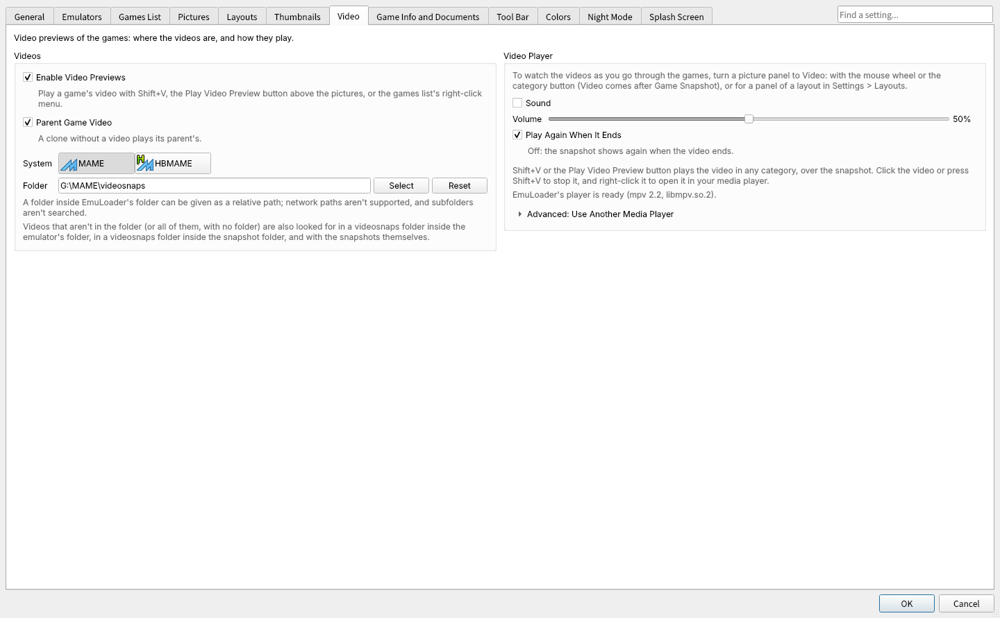
Advanced: another media player
If you'd rather use a media player of your own (MPC-HC, VLC...), open Advanced: Use Another Media Player and check Play the videos in this media player instead. That player opens the videos in its own window: they never play in EmuLoader's picture panel, there's no Video category, and EmuLoader can't stop or close the player. Unchecked, the player set here is only used by Open in... in the video's right-click menu.
- Media Player: click Select and pick the player. Its parameters are filled in for the players
EmuLoader knows (MPC-HC, Windows Media Player, VLC, BSPlayer, Zoom Player) or that are listed in
ini_files\videopreview.ini. - Parameters:
%1is replaced by the video file (in quotes). Include the player's switch that closes it at the end, such as/play /closefor MPC-HC or--play-and-exitfor VLC. - Auto Play starts the player as soon as you select a game (it takes the focus, so use it with care);
Play Dummy Video to Stop Current Playback plays the very short
resources\images\novideo.aviwhen you select a game without a video, run a game or close EmuLoader, to stop the video that's playing.
The settings are shared with the original EmuLoader (ini_files\videopreview.ini); EmuLoader's own
player's settings are in its [EmuLoaderRL] section, which the original doesn't read. A panel set to
Video is saved as the Game Snapshot plus image1_video=1 in ini_files\screenshot_layouts.ini,
so the original shows the snapshot there.
Game documents
The history, MAME information and other texts of the selected game, from the DAT files many MAME users already have. Turn them on with Show MAME Game Documents in the games list's right-click menu, or press F3.

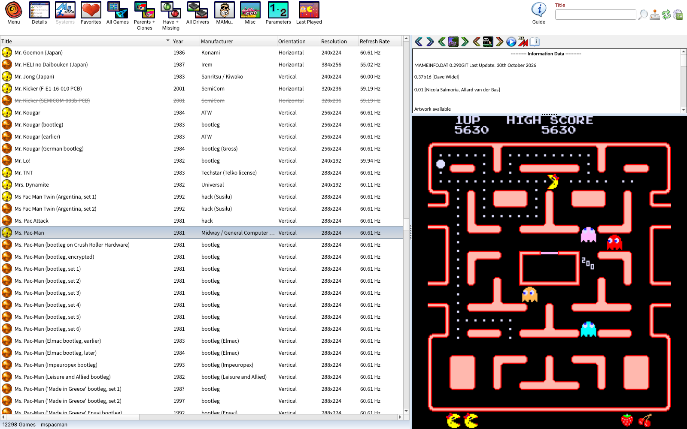
| Document | File |
|---|---|
| Information Data | mameinfo.dat, else messinfo.dat (the game, or its parent) |
| History Data | history.xml, or the older history.dat |
| Driver Data | mameinfo.dat / messinfo.dat, for the game's driver (source file) |
| Story Data | story.dat (MAMESCORE) |
| MAME Action Replay Page | scores3.htm, or marp.dat |
| Game Initialization | gameinit.dat (the game, or its parent) |
The files are read from the folders in the historypath line of MAME's ui.ini
(dats in MAME's folder when it isn't set), as MAME's own data plugin does. Without
ui.ini, they're read from MAME's folder. Settings > Game Info and Documents has links to the sites that offer them.
Addresses in the texts can be clicked.
- Where they show (Settings > Game Info and Documents > Game Documents): in the same panel as the pictures, above, below, left or right of them with a splitter between; or in separate panels, switched with the Images and Docs buttons above the pictures. With the pictures turned off (F6), the documents fill the panel.
- Which ones, in which order: Settings > Game Info and Documents > Display Order. Untick one to leave it out.
- Right-click the text: Text Font, Customize Panel (opens Settings there), Top / Bottom / Left / Right, Go To one of the documents shown, and Disable.
- Colors: Settings > Colors > Game Documents Colors: background, font (click "Font"), border and status bar.
The settings are the original's: el_extras.ini [GameDocuments] for which documents, their order,
the position, size and display mode, and ini_files\lightmode.ini [GameDocuments] for the colors
and font.
Game manuals (PDF)
Put a game's manual in MAME's manuals folder as <set name>.pdf (a clone without
one uses its parent's; manuals\manuals\ works too, as in the original). The book button of the images
tool bar and the games list menu's View Game Manual (PDF) are enabled when the selected game has one, and open
it in your PDF viewer; the button's tooltip says where it is, or where it was looked for. Another folder can be set
in Settings > Game Info and Documents (Game Manuals (PDF), saved in arcade\sysimagefolders_arcade.ini
[MAME] manuals_directory).
Internet Game Info
The globe button of the images tool bar, and Internet Game Info in the games list menu, open the selected
game's page in your web browser. New By default it's a page EmuLoader makes from your
own files, so it needs no internet: the game's pictures (every category, the parent's when the game has none of
its own), what the games list knows about it (year, maker, category, driver, players, controls, screen, the
emulation status, whether you have the set, how often you played it), its clones, and its game documents
(History, MAMEInfo ...) in the order chosen for the Game Docs panel. The page is
EmuLoaderRL\gameinfo\<set name>.html (<list>\<name>.html for a software
list game) and is made again each time, so it always matches your files. Pictures are linked where they are; those
inside zips are copied to gameinfo\images.
Different The original showed a website (ProgettoEMMA or Arcade Italia) inside EmuLoader's window. In Settings > Game Info and Documents, clear
Use a Page Made From Your Files (it takes the place of the original's Restore at Startup) to open the website instead, in your browser: the two link boxes take
%s for the set name (and the list's name, for software list games), and the buttons fill in
ProgettoEMMA's or Arcade Italia's.
Setting up and customizing
Settings
Different Every EmuLoader setting is in one Settings window, a tab per subject. The original has a window of its own for each (Preferences with its two pages, Video Preview Settings, Category Settings, and so on); their menu items are still there, and open Settings at their tab. OK keeps the changes of every tab, Cancel leaves them all as they were. To find a setting, type part of its name in the box at the right of the tabs and press Enter (see Find a Setting). The tabs go from setting up (General, Emulators), through what's shown of each game, to how EmuLoader looks (Tool Bar, Colors, Night Mode, Splash Screen). Each tab has a line at the top saying what it covers, and the settings are in framed groups with a sentence under each one saying what it does; the window is as wide as its widest tab.

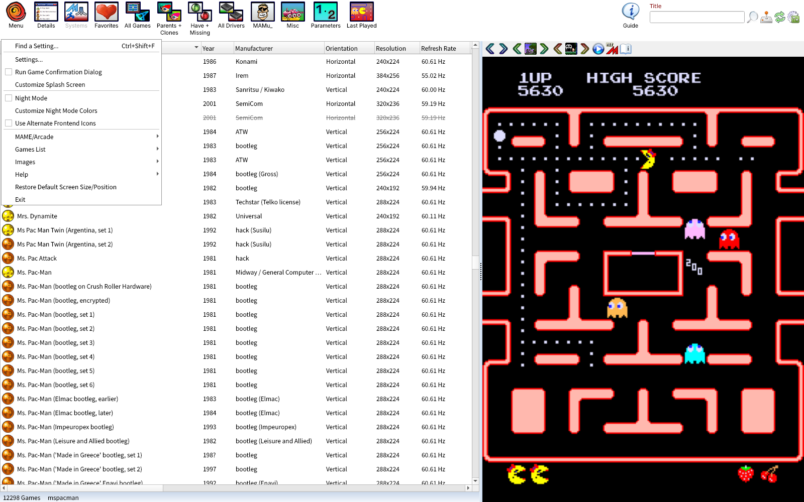

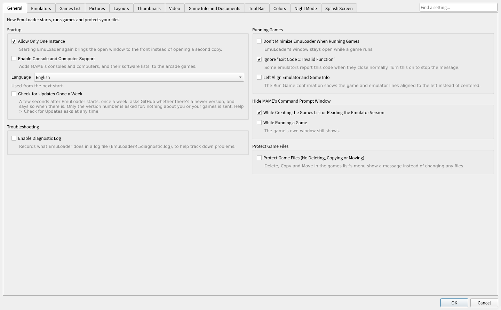
| Tab | What's there | The original's window |
|---|---|---|
| General | Startup, language, running games, Hide MAME's Command Prompt Window, Protect Game Files, the diagnostic log | Preferences, page 1 |
| Emulators | MAME and HBMAME | Emulators Setup |
| Games List | The games list's display and columns, the MAMu_ icons folder | Preferences, page 1 |
| Pictures | The picture categories, their folders and backgrounds | Category Settings |
| Layouts | The multi-image layouts | Layout Settings |
| Thumbnails | The Thumbnails view | Thumbnail Settings |
| Video | Video previews | Video Preview Settings |
| Game Info and Documents | The game documents' display mode and order, where to get their files, the game manuals folder, Internet Game Info | Preferences, page 1 |
| Tool Bar | The tool bar's buttons and their order, presets (changes show at once) | Customize Tool Bar |
| Colors | The Light Mode colors (also Menu Options > Games List > Games List Appearance) | Preferences, page 2 |
| Night Mode | The Night Mode colors and profiles | Customize Night Mode Colors |
| Splash Screen | The splash screen | Customize Splash Screen |
MAME's own settings (mame.ini) stay in their own window: see MAME settings.
Settings: General, Games List, Game Info and Documents, and Colors
Four tabs of Settings (Menu Options > Settings; the original's Preferences). The other tabs have sections of their own: Emulators, Pictures, Layouts, Thumbnails (under View modes), Video, Tool Bar, Night Mode and Splash Screen.
General
- New Check for Updates Once a Week (Startup): see Checking for updates.
- Allow Only One Instance, New Enable Console and Computer Support and the language (Startup); Don't Minimize EmuLoader When Running Games, Ignore Exit Code 1, Left Align Emulator and Game Info (the game and emulator lines of the Run Game confirmation on the left; centered otherwise, as the original) (Running Games); Hide MAME's Command Prompt Window while creating the list or running a game; and Different Protect Game Files (No Deleting, Copying or Moving), the original's Disable "Delete/Copy/Move Games Files": Delete, Copy and Move stay in the games list's right-click menu and show a message saying the files are protected and where to turn it off, instead of being grayed out with no reason given (the original grayed out only Delete, though its caption names the three).
- New Enable Diagnostic Log (Troubleshooting) (not in 8.9.4): EmuLoader writes what it does
to
EmuLoaderRL\diagnostic.log, a line each, with the time: the session, the games list loaded and created, MAME's command lines and how they ended, the filters, every window that opens, and Qt's own warnings. At 5 MB it becomesdiagnostic.log.1and a new one starts. Starting EmuLoader with--debug-logwrites it whatever the setting says. Send it along when you report a problem on the Issues page.
Games List
- Games list and columns: natural sorting, grayscale icons for incomplete games, hide seconds in Last Played and Playtime, and the driver status column options.
Multiline Captions: long titles on two lines in the games list with Large, Extra Large or Mega Large icons
(and in the Machines List panel with Mega Large icons). Disable Clone Indent: the grouped view's clones
lined up with their parents.
New Show Driver Path: since MAME 0.2xx, MAME gives each driver with its folder
in MAME's source (
sony/zn1.cppinstead ofzn1.cpp). On, the Driver Name column and Game Details show it that way; off, they show the file name only. Driver custom settings go toini\source\zn1.inieither way, the file MAME reads. A games list made by an earlier build of this version has file names only: create it again to get the paths. Searching by driver name finds the folder too (sonylists all of Sony's drivers). - Different Add Leading Zero to Version Info is gone: versions always show
as 0.xxx (
.145u1from an old version file shows as0.145u1), so old and new version files look alike and sort together.
Game Info and Documents
- Game Documents: the display mode and the documents' order, where to get their files, and the game manuals folder. See Game documents. Internet Game Info is on the same tab.
Colors
Colors for the tool bar, search panel, selection bar (with separate colors for missing sets and for
when the list doesn't have the focus), status bar, list background (color or picture, tiled or not),
splitters (17 styles), image border, image hint box and game documents. Changes show in the main window immediately.
They're saved in ini_files\lightmode.ini when the window closes.

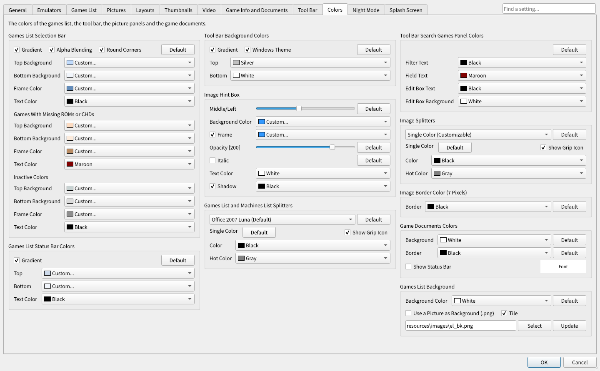
Find a Setting
New Menu Options > Find a Setting, or Ctrl+Shift+F. Type part of a setting's name, such as minimize, snapshot or bilinear: the window lists every match in Settings, MAME Settings and the menus, with where it is (for example Settings › General). Choose one and click Take me there, double-click it, or press Enter:

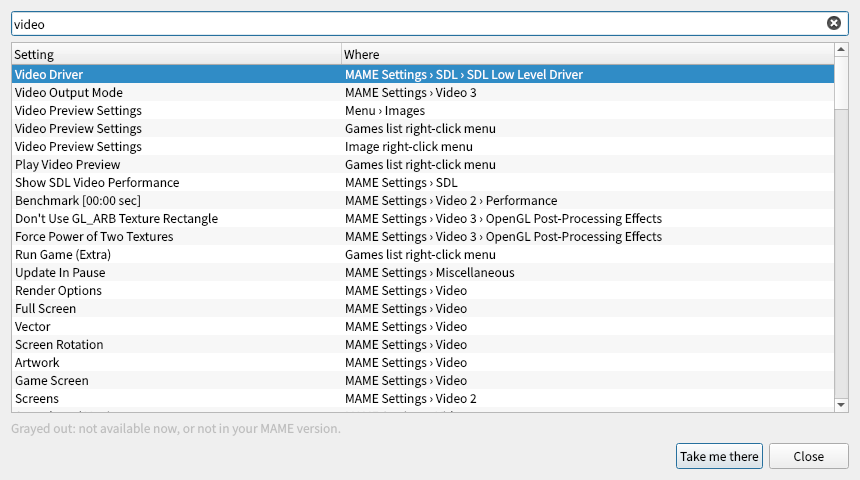
- for a window setting, the window opens at the right page (and sub page) and the setting flashes with a red frame;
- for a menu item, the menu opens with its submenus, the item selected; for a submenu (such as Icon Size), that submenu opens too. A click outside the menus in the first second is ignored, so a click made as they appear doesn't close them. If a click elsewhere closes them later, Find a Setting comes back with your search, so Enter opens them again. Esc closes them for good.
The search also looks in tooltips and in the gray descriptions under the settings, ignores accents and capital
letters (reduire finds Ne pas réduire), and works in the language you've chosen. It also looks at where a setting is,
so icon size finds the Icon Size menu and the sizes in it, and video 3 the settings on that page
(the window or menu name itself, such as Settings or Menu, isn't searched, as it would list
everything in it).
Names come first, then the matches found in tooltips, then the ones found by where they are. Grayed-out settings are listed last: they're not available now, or
not in your MAME version. MAME Settings are searched only once MAME is set up; "Take me there" opens the
default settings (mame.ini).
The Settings window has the same search box at the right of its tabs.
Emulators Setup
Settings > Emulators (Menu Options > MAME/Arcade > Emulators Setup). Choose the system with the MAME | HBMAME switch, then:
- Select chooses the emulator file. EmuLoader asks it for its version (
-version) and shows it as the original does, for example MAME v0.289 (Aug 03 2026) (the date is the file's). Clear removes the system's emulator (the original's Clear System did the same, so it's gone). - Detect the Version Again (the original's Reset System) reads the version and the file date again, for example after you've replaced
mame.exewith a newer one. - MAME Settings... (the original's Default Settings) opens the emulator's settings (
mame.ini), the same window as Menu Options > MAME/Arcade > Emulators Default Settings. The file's label and this button follow the System switch: MAME File and MAME Settings..., or HBMAME File and HBMAME Settings... (hbmame.ini). - The Get MAME links open the MAME, WolfMAME and SDL MAME (Linux and macOS) websites; with HBMAME chosen, Get HBMAME opens the HomeBrew MAME website.
- Ok saves to
arcade\emulators.ini, the file the original uses. Ifmame.iniorui.iniis missing, MAME writes them (-createconfig). Cancel keeps things as they were. At least one system needs an emulator.
When the games list shows no games, the list itself says why, with a button that does what's needed: Set Up MAME... (no emulator set up, or MAME moved: Settings opens at Emulators with MAME's file field flashing), Create the Games List, Clear the Search (a search that finds nothing), or Clear the Filters (the filters in use are named: Favorites only, Main CPU: Z80, ...; clearing puts every filter back to showing all games).
At every start, while no emulator is set up, while the emulator's file isn't where it was (a moved folder, a new drive letter) or while there's no games list yet, a message says so, with a button that does what's needed: Set Up MAME... or Create the Games List; Not Now leaves it for later. Once MAME is set up, EmuLoader offers to create the games list. If you set up a different MAME version, the status bar reminds you to create the games list again so it matches.
Different The original's AlterMAME 1 and 2 (an older MAME build to run a
game with when MAME failed it) are gone. AlterMAME hasn't been updated in years, and an older build's ROM sets no
longer match the games list made from today's MAME, so it mostly failed too. A No-Nag or other build of the same
MAME version can simply be set up as MAME. The original's AlterMAME settings are left in emulators.ini
as they are.
Different The original names a MAME build "UME" when
"ume" appears anywhere in its path (a C:\Documents folder was enough); this version looks only at the
file name.
Arcade ROMs Folders
Menu Options > MAME/Arcade > Arcade ROMs Folders lists the folders each emulator looks for its ROMs in
(rompath in its mame.ini). Click MAME or HBMAME at the top; a system that isn't set up is
grayed out. To change the folders, use Menu Options > MAME/Arcade > Emulators Default Settings.
Arcade Files Versions
Menu Options > MAME/Arcade > Arcade Files Versions shows, for each system set up, the emulator's file, its version, and the version of MAME the games list was made with. New When the two differ, the games list's version is shown in red: create the games list again (Menu Options > MAME/Arcade > Create Arcade Games List) so it matches the emulator.
MAME settings
Menu Options > MAME/Arcade > Emulators Default Settings opens the original's 8-page settings
window, which edits mame.ini. To jump to one option without looking through the pages, use
Find a Setting (Ctrl+Shift+F). Every option the original handles is read and written,
including per-screen settings, the BIOS list, languages, LUA plugins (plugin.ini), controller
definitions, BGFX shader chains and ui.ini's skip_warnings. Options that your
MAME version doesn't have stay grayed out, so the window follows the MAME you use.

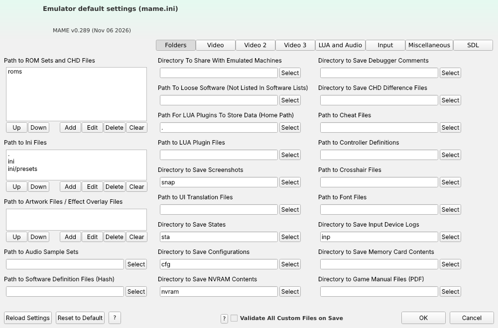
EmuLoader never adds options that are missing from your mame.ini, since an older MAME would
reject them. It also never removes options it doesn't know. When nothing has changed, the file is left
exactly as it was.
Custom settings
Right-click a game > Set Custom Options to give it its own settings. You can also set them for its
driver, or for any of MAME's other levels: horizontal, vertical, raster, vector, LCD, SVG, arcade, console,
computer, othersys and debug. The window shows the value each option gets from the levels above. Only the
values that differ are written, to the same files MAME reads (ini\pacman.ini,
ini\source\pacman.ini, ini\vertical.ini, ...). Delete Custom Options removes
the file.
RAM Size (Miscellaneous page): a computer's own settings list the RAM sizes MAME has for it, with its
default named; (Use Default) leaves it to MAME. The choices come from
arcade\games\mame_ramsize.ini, which creating the games list writes from MAME's list, in the
original's format. The box is grayed out for the machines that have no choice.
Night Mode
Menu Options > Night Mode draws the whole program dark: the windows and their controls, the menus, the
tool bar, the games list (with its own background picture, bkgrd_dark.png), its selection bar, column
titles, status bar and splitters, the image hint box and the game documents. The games' fonts come from
ini_files\sysgamecustomfont_nightmode.ini (white, silver for preliminary sets, light red for missing
ROMs, until you customize them in Night Mode). It's remembered ([Preferences] NightModeEnabled).

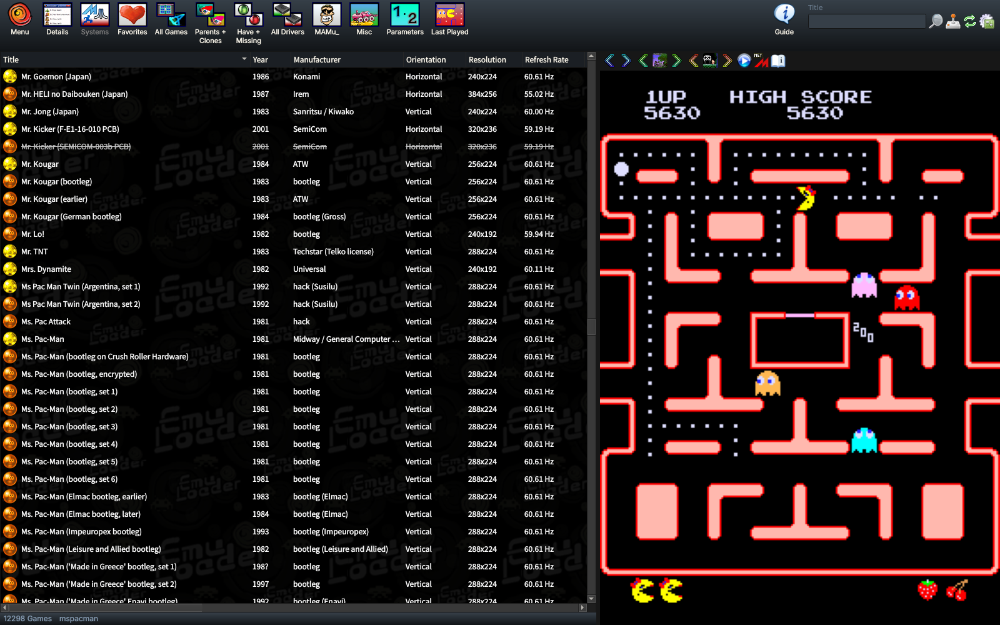

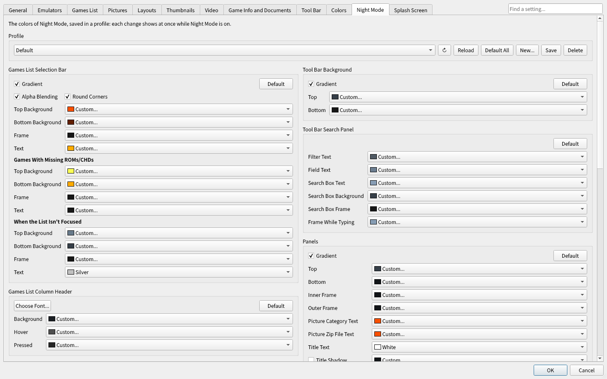
Menu Options > Customize Night Mode Colors sets every one of those colors. The program shows each change
at once while Night Mode is on; Save keeps them in the profile, nightmode\<profile>.ini
([Preferences] NightModeProfile, Default at first). OK in Settings saves them too, and Cancel puts the profile's
saved colors back. A box's
Default puts its colors back as they were at first; Default All does it for all of them. New
makes another profile with the colors shown, Delete removes one, Reload reads the file again.
Right-click a color > Copy Color, then right-click another > Paste Color to give it the same
color. The color goes to the clipboard as #rrggbb, so one copied from elsewhere can be pasted too.
Different The
original's previews, its "blue" defaults, the tool bar overlay icons and the check box pictures aren't ported; the
program itself shows the colors.
Splash screen
The splash screen is the original's status window: the EmuLoader artwork with the job's title, what it's doing now, a timer, a count and a progress bar along its bottom edge. It shows while EmuLoader starts, and during long jobs such as creating the games list. For long jobs it has a Cancel button (or press Esc) when the job can stop. Different The original had no Cancel there.
Customize Splash Screen
Customize Splash Screen (Menu Options) shows the splash screen with sample texts, and its settings beside it:

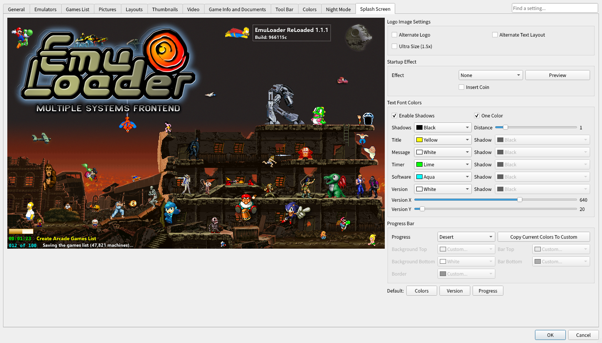
- Logo Image Settings: Alternate Logo (
logo2.png, the "Night Mode Edition" artwork), Alternate Text Layout (the title beside the timer, the progress bar above it), and Ultra Size, which makes the splash screen half as big again. On a high-resolution screen the sharper 4K artwork is used by itself. - Startup Effect New: an arcade effect played while EmuLoader starts:
- Vector Grid: a neon grid scrolls toward you, and the splash screen rises above it and fills the window;
- Marquee Light-Up: the artwork stutters on like a fluorescent marquee, then glows;
- Card Flip: the splash screen swings in from edge-on, with a glint passing over it;
- Starfield Warp: stars stream past, and the splash screen grows out of the middle;
- High Scores: an arcade high-score table types in. The top entry is CAC, 19742021: Ciro Alfredo Consentino, 1974–2021, who created EmuLoader;
- Signal Glitch: the picture comes in torn and out of sync, then snaps clean.
- Text Font Colors: the color of the title, message, timer, count ("Software") and version, their shadows (one color for all, or one each) and the shadows' distance.
- Version X / Y: where the version is. You can also drag it on the picture. Different It's at the top right by default (640, 20), clear of both pictures' artwork, and a little larger than in the original. The original's default place (under the logo, where it overlaps the alternate picture) is moved there too; a place you chose yourself is kept. Default > Version puts it back.
- Distance: how far each shadow is from its text, down and to the right, in pixels. 0 is no shadow; 1, the default, is a thin outline that keeps the texts readable over the picture.
- Progress Bar: the original's color schemes (Desert, Grass, Silver...), or Custom Colors. Copy Current Colors To Custom starts your own from the scheme shown.
- Default: Colors, Version and Progress put those back as they were.
OK saves them in ini_files\splash.ini [Splash], with the original's keys (the original's
splash.ini is copied the first time), plus Effect and InsertCoin. The
arcade lettering is Press Start 2P by CodeMan38
(zone38.net), built into the program; its license (SIL Open Font License) is in
licenses\PressStart2P-OFL.txt. The timer and count use Consolas, as the original does where
Windows has no Terminal font.
Language
New Every text in EmuLoader's windows, menus, messages and tooltips can be
translated with a language file, a plain text file in the lang folder next to the program
(or in the data folder's lang folder).
- Choosing it: a clean install asks which language to use when there's more than English, with the Windows display language already selected when there's a file for it. Change it later in Settings > General > Language; the new language is used from the next start.
Making a translation
- Making a translation: copy
lang\English.iniand name the copy after the language code:de.ini(German),es.ini(Spanish),pt_BR.ini(Portuguese, Brazil),zh_TW.ini(Chinese, traditional) and so on. SetName=to the name shown in the list, in the language itself (Name=Deutsch,Name=Français);Locale=can be left empty, as the file name gives the language. The code also picks Qt's own translation of its standard buttons and file dialogs (translations\qtbase_de.qm). Then fill in the right side of each line:[Menus] Add To Favorites=Zu Favoriten hinzufügen - Fonts: letters that a font doesn't have (Thai, Japanese, Korean, Chinese and others) are shown in
the system's own font for them, such as Leelawadee UI for Thai or Yu Gothic UI for Japanese, with the
language's script first. This works with every font, including the ones you choose for the games list and its
column titles. Some scripts read better in a font of their own or a little larger, so under
[Language]a translation can set:Font=: a font for EmuLoader's windows and menus, in place of Segoe UI (Font=Leelawadee UI). A font that isn't installed is ignored.FontSize=: points added to all of EmuLoader's text (FontSize=+1). It's added to the fonts you choose too, but only when they're shown: the sizes you set are saved as you set them.
- The code keeps file names to plain letters, which every zip tool and Windows version reads correctly;
users only ever see the
Name=line. A setting made with an older file name (such asFrench) still finds the file. - Each section is one window or part of the program, named as you see it:
[Main Window],[Favorites Manager],[Settings - Video]... Lines left empty stay in English, so a partial translation works. A[Common]section translates a text everywhere at once. \nis a new line. Keep%1,%2, ... and HTML such as<b>as they are; they're filled in by the program. Save the file as UTF-8.- After an update:
tools/make_language_template.py lang\de.ini(in the source package) adds the new texts to a translation and keeps what's already translated. A text that moved to another window keeps its translation. Files made with the earlier section names ([FormPreferences],[eld::MainWindow]...) still work, and the tool rewrites them with the new names. - Not translated, on purpose: MAME option values (they're written to
mame.ini), game titles and manufacturers (they come from MAME), and this guide and the original's text files. - An example translation,
lang\fr.ini(French), is included. - English (UK): EmuLoader's texts are in US English (color, gray, center, favorites, customize).
lang\en_GB.inigives them in British spelling (colour, grey, centre, favourites, customise). A clean install on a British English Windows picks it; others choose English (UK) in Settings > General > Language.
Long translations
The windows keep the original's fixed layouts, so a translation much longer than the English (German often runs about a third longer) may not fit everywhere. EmuLoader helps where it can:
- Labels and check boxes widen into the empty space beside them, up to the next control or the edge of their box. They never grow over another control.
- A text that still doesn't fit is cut with "…", and pointing at it shows the whole text as a tooltip, so nothing is lost. This also covers English texts when a font is missing.
- Buttons, list entries and group box titles keep their size. Short words matter most there
("Select", "Reset", "Default"). A
\nsplits a label or check box over two lines where there is room below it.
Checking a translation
Checking a translation: langcheck.exe, next to EmuLoader-ReLoaded.exe, builds the
windows whose places are fixed (the main window and MAME Settings) in English and with the translation, and lists
each text that is too long (the other windows grow to fit their texts), with the pixels it
needs and has. Run it from a command prompt in the EmuLoader folder:
langcheck lang\de.ini
langcheck lang\de.ini --grab pictures--grab also saves a picture of each window with the translation in the folder
pictures, to look over without opening every window. A text is reported when it doesn't fit
where the English does, or when it's wider than an English text that already doesn't fit.
Reference
Files
File (in the EmuLoaderRL folder) | Contents |
|---|---|
EmuLoaderRL.ini | Settings: the original's EmuLoader.ini, copied the first time. This version's own settings are in [EmuLoaderRL]. |
arcade\emulators.ini | MAME and HBMAME, as Emulators Setup sets them (the original's AlterMAME keys are left as they are). |
arcade\games\mame.el | Games list, made from mame -listxml. |
arcade\games\mame.elstatus | Which sets you have. |
arcade\games\mame.elsoftlist, mame_biossets.ini, mame_memcard_support.ini | Software lists, BIOS choices and the machines with memory card slots, written with the games list. |
arcade\mame_softwarelist_games\<list>.el, .elstatus | The software lists' games and which you have. |
arcade\games\mame.elsoftlistreq, arcade\mame_machines_usercustom.ini, arcade\mame_softlist_exclude.txt, arcade\mame_machines_exclude.txt | The software list games' requirements, the machine each list runs with, the lists left out, the Machines List panel's disabled machines. |
arcade\games\mame_audit.txt | What the last Full Scans found, for View Missing ROMs/CHDs. |
arcade\games\mame_ramsize.ini | The RAM sizes of the machines that have a choice (MAME Settings > RAM Size), written with the games list. |
EmuLoaderRL\diagnostic.log | Settings > General > Enable Diagnostic Log (or --debug-log). |
arcade\games\mame_multicart_neogeo.ini, mame_multicart_stv.ini, arcade\mame_multislot_machines.txt | The games a multi-slot Neo-Geo MVS / ST-V takes (written with the games list), and the Neo-Geo boards with the last one used. |
arcade\custom_params\mame\<game>.txt | Custom parameters (custom_params=-cheat). |
arcade\memcard_lastused\mame\<machine>.ini | The last memory cards used with Run Game (Extra). |
favorites\*.txt | Your favorites profiles (pacman=mame lines; favorites.txt is the default). The active one is [Preferences] FavoriteFile. |
arcade\played_games\mame.txt | Play statistics: pacman=3;1500000000;754000 is times played, last played (a DOS date) and total playtime in milliseconds; the last played game is first. |
ini_files\columns_profile.ini | Column order, widths and visibility. |
ini_files\lightmode.ini | Light mode colors. |
el_extras.ini | Game documents (on or off, order, position and size, display mode); Favorites Manager window; Delete/Copy/Move choices. |
ini_files\screenshot_layouts.ini, image_category.ini | Image category and background settings. |
ini_files\videopreview.ini | Video preview settings: the media player and its parameters, the folders, the options. |
ini_files\games_filters.ini, sysgamecustomfont.ini | Machine filter, game fonts. |
arcade\sysimagefolders_arcade.ini | Picture folders, when MAME has no ui.ini. |
| File (in the data folder: EmuLoader's) | Contents |
resources\, docs\, arcade\filters\ | Icons and pictures, game documents, catver.ini and the other filter files. Only read. |
lang\<language code>.ini | New Language files (fr.ini, de.ini, ...); the one in use is [EmuLoaderRL] Language. |
EmuLoaderRL.lock, EmuLoaderRL.activate | New Used by Allow Only One Instance. You can ignore or delete them while EmuLoader is closed. |
Differences from the original
Files, running games and game files
| Feature | This version |
|---|---|
| Files | This version keeps its own files in EmuLoaderRL\ and doesn't write to the original's. The first start copies your data from the original and makes the games list again from MAME. |
| Emulators | MAME and HBMAME only. Consoles and computers are off unless you turn them on in Settings. |
| Emulators Setup | MAME is called UME only when the program's own name says so, for example ume64.exe. The original also called it UME when a folder name contained those letters, such as Documents. |
| Other emulators for consoles and computers | Removed: consoles and computers run through MAME's software lists. The Console/Computer/Handheld menu (Emulators Setup, Games Folders Settings, Systems Editor, Games Editor, Create Games List), Run Game (Console/Computer Emulator), and the tool bar's Load Game Using Metadata File (.cue) and Select Default Emulators buttons are gone. Their settings are kept for the original. |
| Parameters tool bar button | The original's Emulator Parameters To Use chose the parameters of another emulator; here it opens the selected game's custom parameters, as Set Game Parameters does. |
| Browse Games With | Keyboard + Mouse only. The modes for arcade controllers (Devastator II, Hot Rod SE, SlikStik, X-Arcade, Swap 2nd Player Up/Down) and View Arcade Controllers Layout are removed: set such a controller up as a keyboard. |
| AlterMAME | Removed: an older MAME build's ROM sets no longer match today's games list. The Run Game With AlterMAME and Auto Run Game With AlterMAME menu items are gone too. |
| MAME's errors | A window explains why the game stopped and shows MAME's own message (the missing ROM files, ...), instead of only the exit code. |
| Hide Command Prompt Box > Run Game | Hides MAME's console window only; the game window always shows. |
| Allow Only One Instance | Uses a lock file in the data folder. Starting a second copy brings the running one to the front. |
| Custom parameters | A <game> tag also works for arcade games. Machine Slots / Media Info asks MAME about the one machine when the window opens, instead of keeping lists for every machine. |
| Run Game (Extra) | Options such as autosave are compared with all the ini files MAME reads for the game (the original compares with mame.ini only), and can be turned off as well as on. Renamed or deleted files go to the Recycle Bin. |
| Delete Selected Games Files | Files go to the Recycle Bin (the original deletes them for good). Copied or moved CHDs go into a folder named after their game (the original puts them all in one chd_files folder). One window for one game or many. |
| Protect Game Files (the original's Disable "Delete/Copy/Move Games Files") | Delete, Copy and Move stay in the right-click menu and show a message saying the files are protected and where to turn it off; the original grayed out only Delete. |
| Scan Games (Audit ROMs) | One window says which games and how, in place of Select Scan Mode and the Scan Games submenu, and every scan says what it did. The Full Scan is done by MAME (-verifyroms), so merged sets are checked too; it can check CHDs and audio samples, and asks before changing the games list. Creating the games list always does a quick scan. View Missing ROMs/CHDs can also show the sets not found. |
The games list and the tool bar
| Feature | This version |
|---|---|
| Games Filters, Misc | The driver-based games filters work with MAME 0.2xx (driver files in folders). The Misc button looks pressed while a filter is in use; the control type is remembered. The ROM filters use ROM details worked out when the list is made. |
| Tool bar | Captions are text under the pictures (translated, sharp at any scaling) instead of part of the pictures; the orb has the caption "Menu"; buttons that don't fit go into a » menu. |
| Tool bar order | Buttons can be put in any order, with separators and spaces, and saved as presets; the original only showed or hid them. A Guide button and F1 open this guide. |
| Game Details | The ROM list comes from MAME when the window opens, not from a file written with the games list; ROMs are checked by CRC in .zip files. |
| Last Played | Lists MAME and HBMAME only (the systems this version runs). The game icons are those of the games list; the window is sized for the 25 games instead of the screen. |
| Driver Name | Shown with or without its path in MAME's source (Settings > Games List > Show Driver Path). The original shows the folder and then can't save driver custom settings; this version saves them to ini\source\<driver>.ini, where MAME reads them. |
| Delete Selected Games From Games List | MAME's games are always listed, so it says so and changes nothing (the original uses it for console and computer games). |
| Add Leading Zero to Version Info | Gone: versions always show as 0.xxx. |
| Exporting the games list | Files are saved as UTF-8 with Windows line ends; software list games are written as nes\smb in the short format; the other arcade emulators' choices aren't shown. |
| Internet Game Info | Opens in your web browser instead of a panel in EmuLoader's window; by default it's a page made from your own files, with no internet needed. Use a Page Made From Your Files takes the place of Restore at Startup. |
Pictures and icons
| Feature | This version |
|---|---|
| Image panel | The mouse wheel changes the category of the picture under it (in multi-image layouts too); Ctrl + wheel steps through a picture's other pictures. Not in the original. |
| Image panels | The images are always read in the background, and only the one for the game now selected is shown, so moving quickly through the list doesn't wait for each image or show the wrong one. Image zip files stay open between images. Preferences' "Disable Threaded Preview Images Loading" (the original's way around its own threading trouble) is gone: there's nothing to turn off. |
| Layout selector | A list with a preview of each layout. |
| Image tools | Deleted pictures go to the Recycle Bin. Scan Invalid Images checks against every game of the list, including the ones the filters hide. Images of Games You Don't Have (the original's Scan Images of Missing Games) shows the picture in the window. Category Settings and Video Preview Settings list MAME and HBMAME only. |
| .7z archives | Pictures and icons are read from .7z archives too (snap.7z, icons.7z); a slow solid one can be converted to a .zip. |
| MAMu_ icons | The MAMu_ Icons Manager is the MAME Images Manager on its Icons (MAMu_) category, instead of a window of its own. |
Settings and looks
| Feature | This version |
|---|---|
| Settings | One window with a tab per subject, in place of Preferences and the separate settings windows (their menu items open their tab); Cancel leaves every tab as it was. Menu Options > Preferences is now Menu Options > Settings..., as Windows and macOS call it; Find a Setting still finds it by "Preferences". |
| Settings' tabs | Framed groups that fill the window, a sentence under each setting, full words instead of abbreviations (Top Background instead of Top Bkgrd); Internet Game Info shares the Game Info and Documents tab. Pictures, Video and Emulators have a MAME | HBMAME switch where the original had a big system header; the ? and Help buttons' texts are written under the settings. |
| Find a Setting | Searches every setting of Settings, MAME Settings and the menus by name, and goes to it. |
| Night Mode | Customize Night Mode Colors shows the colors in the program itself; the original's previews, its "blue" defaults, the tool bar overlay icons and the check box pictures aren't ported. |
| Splash screen | Long jobs have a Cancel button (or Esc). The version is at the top right by default, a little larger, clear of both pictures' artwork. |
| Language | Every text can be translated with a language file (lang\*.ini). The original is English only. |
| Help menu | Has "EmuLoader ReLoaded User Guide" (this page, also F1) and "Check for Updates" (see Checking for updates). |
| About | Shows the version and build, your setup (Windows, Qt and MAME versions) with Copy Version Info for a problem report, the data and settings folders, links (GitHub Page, Report a Problem, User Guide, Check for Updates) and the credits, with Licenses... for the licenses folder. |
Everything else
| Feature | This version |
|---|---|
| Other systems | Runs on Linux and macOS too. There, Windows' title sort is reproduced so the list order is the same. |
Left out on purpose
These features of the original aren't in this version. Their saved settings are kept as they are, for the original:
- Other emulators for consoles and computers: they run through MAME's software lists (see Differences from the original).
- AlterMAME: an older MAME build's ROM sets no longer match today's games list.
- Browse Games With an arcade controller (Devastator II, Hot Rod SE, SlikStik, X-Arcade) and View Arcade Controllers Layout: set such a controller up as a keyboard. Keyboard + Mouse is the only choice.
- Add MAME Device Sets With No ROMs (the original's Scan Games Mode and Select System windows; its menu item was hidden, marked "DO NOT REMOVE!!!"): it also wrote MAME's device sets without ROMs (sound chips, CPUs and other parts machines are built from) into the games list file. They're never shown and aren't needed to check ROMs, so the games list leaves them out, as the original does by default.
Checking for updates
New Once a week, a few seconds after it starts, EmuLoader asks GitHub whether a newer version has been released, and says so when there is one. Help > Check for Updates... asks at any time, and also says when you have the latest version or why it couldn't ask. Only the version number is asked for: nothing about you or your games is sent.

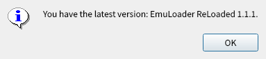

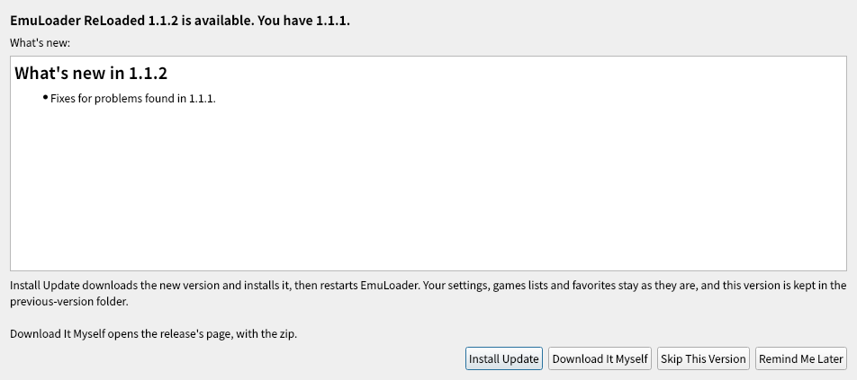
When there's a newer version, the Update Available window shows what's new in it, and you choose how to get it:
- Install Update: EmuLoader downloads the new version, checks that the download is complete and
undamaged, puts the new files in its folder and restarts on the new version. Your settings, games lists, favorites
and the rest of your data stay as they are: only the program's files are replaced. The version it replaced is kept
in the
previous-versionfolder (only the last one), with a note saying which version it is; to go back, close EmuLoader and copy those files over the ones in the program folder. - Download It Myself opens the release's page in your web browser, with the zip. To update yourself, close EmuLoader, then unzip the new version over the old one.
- Skip This Version: the weekly check doesn't mention that version again (Check for Updates still does).
- Remind Me Later: asked again at the next weekly check.
- Turn Off (the weekly check's message only) stops the weekly check. Settings > General > Check for Updates Once a Week turns it on or off.
If the update can't be installed, EmuLoader says why, changes nothing and offers the release's page instead. That happens when EmuLoader isn't allowed to change the files in its folder (for example under Program Files), when the download fails or is damaged, or when a file can't be replaced because another program has it open. Cancel stops the download at any time.
When there's no internet connection, the weekly check says nothing and asks again at the next start. On
Windows it uses Windows' own connection and proxy settings. The times and choices are kept in
EmuLoaderRL\EmuLoaderRL.ini [EmuLoaderRL]: CheckForUpdates, LastUpdateCheck and
SkipUpdateVersion.
Troubleshooting
No pictures show
Check that MAME's ui.ini (or mame.ini, for snapshots) points to the folders that
hold them. Relative folders are relative to MAME's folder, not EmuLoader's. If you change MAME's folders,
reopen Emulators Default Settings or restart EmuLoader to pick up the change.
The list is empty or out of date
Menu Options > MAME/Arcade > Create Arcade Games List after updating MAME, and Reload Arcade ROMs Folders after adding ROMs.
Windows won't start the program
The program isn't signed, so Windows SmartScreen may warn about it. Click More info > Run anyway.
Keep the DLLs and the platforms, styles and imageformats folders next
to EmuLoader-ReLoaded.exe.
EmuLoader closes unexpectedly
When EmuLoader closes because of an error, it writes what happened to EmuLoaderRL\crash.log: the
build, the time, and where in the program it happened. Report it on the
Issues page with that file and the
version info (Help > About > Copy Version Info), and with
EmuLoaderRL\diagnostic.log if Settings > General > Enable Diagnostic Log was on, and say what you
were doing. The program file carries the line numbers needed to read the crash log.
Going back to the original
Just start EmuLoader.exe: its files are as it left them, as this version keeps its own in the
EmuLoaderRL folder. Changes made in one program don't show in the other. To start this version fresh
from the original's files, close it and delete (or rename) the EmuLoaderRL folder: they're copied
again at the next start.